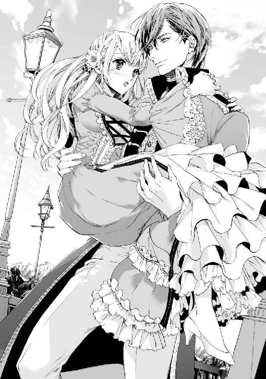
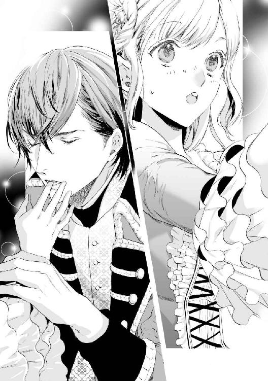
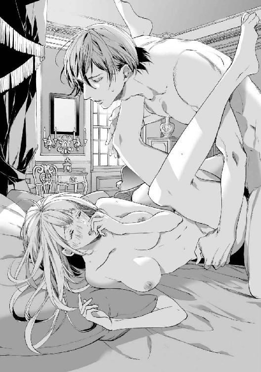

| 国王陛下は無垢な花嫁にご執心! (LUNA文庫) | |
| 永久 めぐる | |
| 天海社／LUNA文庫 (2018) | |
国王陛下は無垢な花嫁にご執心！
[著者]永久めぐる
[イラスト]北沢きょう
プロローグ
新緑の季節は美しい。
春先から徐々に緑が増え、今やどこを見渡しても瑞々しい緑ばかりだ。
「まるでエメラルドみたいだわ」
リュシーは感嘆のため息をつく。
小高い丘の上にある館からの眺めは素晴らしく、眼下には農地が、その向こうには陽光に煌めく川、そして黒々とした森と峻険な山が続く。
山頂の雪はそろそろ消えそうだ。
農地には麦のほか、さまざまな野菜も植えられている。それらの葉はみな陽光にキラキラと輝き、森の木々ものびのびと枝を伸ばしている。
リュシーがエメラルドみたいだと評したのも頷ける、牧歌的でうららかな昼下がりであった。
心地良い風がリュシーの頬を撫でる。
木漏れ日も心地よく、彼女はふわぁと大きなあくびをした。
涙のにじんだ目尻を擦るリュシーの耳に、馬蹄の音が聞こえてきた。かぽかぽという、のどかな音ではない。遠くからでも腹に響く――一刻を争うような駆け方だ。
「あら、早馬？ どうしたのかしら？」
彼女の見ている前で馬の姿はどんどん大きくなり、館の前の跳ね橋を駆け抜け前庭へと乗り入れたようだ。その先は、彼女のいる位置からは見えない。
「乗っていた方、近衛騎士団の制服を来ていたような気がするけど......まさかねぇ」
ありふれた濃緑の外套の下から、白い服がチラリと見えて、それが近衛騎士の制服に見えたのだ。だが、一瞬のことだったし、見間違えたに違いない。
王直属の彼らは、王の命令で国内外を問わずあちこち飛び回ることもあるが、治安が安定しており、農作物の収穫量も安定、ここ何年も災害にも見舞われていない平和なフィーユ領に用があるとは思えない。
「うん！ 気のせい、気のせい！」
リュシーは呟いて、読みかけの本へ視線を戻した。
彼女の父であるフィーユ伯爵は仕官しておらず、領地に構えた館でのんびりと領地の経営をしている。王都に上がるのは社交シーズンである夏と、税金を納める晩秋くらいなものだ。
あとは千篇一律のような長閑な生活を満喫している。
リュシーも父同様、今の生活を愛している。
本に目を戻したものの、やはり早馬が気になってしまう。なにかが起きそうな予感に胸がざわめき、いくら文字を目で追っても頭に入ってこない。読書を諦めて本を閉じた、その矢先――
「んまぁ！ リュシーお嬢様！ またそんなところにお登りになって！」
下から呆れたような声が聞こえてきた。声の主は召使いのモリーだ。腰に手を当てて、眉を吊り上げながら、木の上の彼女をじっと見つめている。
だいぶ高齢のはずだが、その眼光の鋭さとかくしゃくとした身のこなしは歳を感じさせない。
「――しまった。見つかっちゃったわ」
リュシーはこっそり肩を竦めた。
「ごめんなさい！ あんまりにも良い天気だから、つい登りたくなっちゃって！ 今すぐ降りるわ」
言うが早いか、彼女はひょいと飛び降りた。彼女が座っていた枝は低く、彼女の胸当たりの高さまでしかない。
体についた汚れを払い、何事もなかったかのように召使いへ笑いかけた。
「お待たせ。私になにか用？ 今日の午後はなんの予定もなかったはずだけど」
「お嬢様、もう子どもではないのですから、木登りなどおやめくださいませ。いくら背の低い木でも落ちたら危のうございます」
そんなヘマはしない、と言っても怒らせるばかりだろう。
「心配をかけてごめんね。もうしないわ」
「そうなさいまし。それにいくら天気が良くても風は冷とうございますでしょう？ 風邪でもお引きになったら大変です」
幼い頃のリュシーは体が弱く、少しの無理で風邪を引いてはよく寝込んでいた。
心配した両親が方々から滋養強壮に良いという薬草や食べ物を取り寄せたり、万病に効くという温泉地へ湯治に連れて行ってくれたおかげか、今ではすっかり健康な体になったが。
しかし、両親や屋敷で働く者たちは、いまだにリュシーを体の弱いお嬢様として扱うことが多い。
気にかけてもらえるのはありがたいことだが、反面、いつまでも半人前として扱われているようで寂しい。
（社交界にデビューもしたし、私ももう大人なのになぁ）
同じ年にデビューした令嬢たちは、ひとり、またひとりと結婚している。それでもまだ半数以上は未婚なので、リュシーも決して遅いというわけではない。
ただ、未婚の令嬢たちの多くには既に親の決めた婚約者がいることが多いので、リュシーのように完全に何の話もないのは少し異例だ。
（私の体が弱かったから、なのよね）
将来の婚姻にあれこれ思いを馳せるより、病気がちな娘の療養が優先だった。そのことにリュシーは感謝しこそすれ、不満などはない。
家督を継ぐ予定の兄は既に結婚して、王都のタウンハウスに住んでいる。父が引退を決めたら、彼がここへ戻ってくるか、代理人に管理を任せるかするのだろう。
だから、リュシーにも結婚を急ぐ理由はなく、いつか良縁に恵まれて、身分の釣り合いが取れる男性のところへ嫁いでいくことになるはずだ。
（都会は苦手だから、できれば領地にお住まいの方のところへお嫁に行けるといいのだけれど）
社交界に顔を出すのは必要最低限、あとは領地に引きこもって大好きな読書や刺繍に精を出し、夫や領民たちとのんびり暮らしていきたい。
それがリュシーの、将来に対する希望だ。
「まったくお嬢様ときたら、少しお体が丈夫になったからといって無理しすぎですわ！ お転婆もほどほどにしてくださいませね。このモリー、心配で心配で......」
言えない。ほんの少しの木登りに目くじらを立てるモリーに向かって、黙って屋敷を抜け出し、領民たちに混ざって農作業に精を出したり、馬を駆ってあちこちの森やら川やらに遊びに出かけていることなんて！ そんなことを知られてしまえば、モリーは卒倒してしまうかもしれない。
「わ、わかったわ、モリー！ ――ところで私に何か用？」
「ああ、そうでした！ 私としたことがついうっかり。――お嬢様、旦那様がお呼びです。至急、書斎までおいでになるように、と」
「お父様が？ なにかしら？ 知らせてくれてありがとう。すぐ向かうわ」
リュシーは急いで父の書斎へと向かった。
（先ほどの早馬と関係があるのかしら？ 思い返してみれば、なんとなく背格好がお兄様に似ていたけれど、まさか今頃突然帰ってきたりしないわよね。お勤めだってあるんだし）
彼女の兄、アナトールは近衛騎士として王宮に勤めている。
先ほどの早馬に乗っていた人物について、近衛騎士の制服を着ていたのではないかと考えたのは、彼の制服姿が印象深いせいかもしれない。
アナトールは忙しいらしく、領地に顔を見せに来ることなど稀だし、そもそも先触れもなく帰ってきたりはしない。
定期的に、兄嫁が手紙で近況を知らせてくれるのだが、数日前に届いた手紙には日々変わりなく穏やかに過ごしていると書いてあった。
「兄様と似た背格好の殿方なんて、世の中にはたくさんいらっしゃるわよね」
口に出して呟いてみたが、それでも、胸の奥のざわざわが消えない。
もしも兄が都から馬を駆ってやってきたなら、ただ事ではない。それも慶事というよりは厄介事の確立が高いだろう。
今の幸せな生活が、ずっととは言わないが、もう少し続いてほしいと願っている彼女にとって、突然の変化はたとえどんな些細なものでも嫌だった。
「お父様、リュシーです」
ノックをして声をかければ、書斎の中から「入れ」と短く父の声がした。
いつもより少し固い声に聞こえたのは、リュシーが緊張しているからに違いない。彼女はそう思うことにした。
ごくり、と息をひとつ飲んでドアを開けた。
「失礼します」
断りつつ部屋の中に目を向けたリュシーは、直後、目を疑った。
「お、お、お、お兄様!?」
「やぁ、リュシー。久しぶり。ちょっと見ない間にまた綺麗になったね」
にこにこと笑ってお世辞を言うが、その姿は開いた口が塞がらなくなるほどひどい有様だ。
リュシーとよく似た亜麻色の髪はボサボサに乱れたうえ土埃にまみれて白っぽく変色し、顔は土埃と汗が入り交じって変な模様を作っている。手に持った外套にはあちこちに泥はねが付き、白い制服は元の色がわからないほどうす汚れている。
「に、兄様、どうしたの!? なにか重大なミスでも犯して解雇されまして？ それとも悪事か何かを働いてそれが明るみに出て追われてらっしゃるの？ まさかお義姉さまを置いて逃げ......」
「違うから！ その予想、全部外れてるから！ 言うに事欠いて悪事を働くって......お前は僕をなんだと思ってるんだ！ 想像力が逞しいのもいい加減にしなさい」
アナトールは頭痛がすると言わんばかりに、額を抑えた。
「では、どうしてそんなお姿でお戻りに......？」
「その前に、リュシー、お前も座りなさい」
兄妹の間に、冷静な声で割って入ったのは父だ。険しい顔つきの父を見て、リュシーはただ事ではないと確信した。
冗談のような会話をやめて口をつぐんだ。
父と向かい合う位置に座るように指示されて大人しくソファに座れば、横には彼女の退路を断つかのようにアナトールが腰を下ろした。
話より先に風呂に入ったほうがいいのではないか。埃まみれのままでは不快だろうに。と思うが、それを口に出せるような雰囲気でもない。
リュシーは、父か兄のどちらかが口を開くのを、じっと待った。
「アマンドル王国は知っているね」
しばしの沈黙のあと、口を開いたのは兄だ。
「え？ はい。存じております。それがなにか......？」
知っているもなにも、アマンドル王国は、リュシーたちが住むレザン王国の隣国ではないか。市井の子どもだって知っている。それを今さら尋ねられたことに、リュシーは眉をひそめた。
兄の話はいったいどこへ落ち着くのだろう？
「そのアマンドルの国王クラース陛下が、お前との婚姻を望んでいらっしゃる。昨日、国王陛下宛てに新書が届いた」
「――――申し訳ありません。お兄様のおっしゃることがよく聞こえなかったようです。とんでもない聞き違いをしてしまったのでもう一度おっしゃっていただけますか？」
「たぶんそれ、聞き違いじゃないから。隣国の王が、リュシー、お前との結婚を希望なさっているんだ」
噛んで含めるように、ゆっくりはっきり告げられて、リュシーは自分の聞き違いでも、突然耳が変になったのでもないことを理解した。
「なっ、なななな、なんの冗談......」
「ならよかったのにね。冗談じゃないから、僕が早馬で駆けつけたんだよ。先ほど父上には、クラース陛下からの親書を渡した」
リュシーが兄から父へと目を転じれば、厳しい顔をした父はアナトールに同意するように「うむ」と小さく頷いた。
「たしかに、お前との婚姻を申し込みたいと書かれていた」
リュシーの父が受け取った手紙は、レザン国王宛てに送られた親書とともに、アマンドルの使者が携えてきたもので、リュシーの父であるフィーユ伯爵に宛てたものだ。
クラース国王直筆で、リュシーとの結婚の許可をもらいたい旨がしたためられている。
許しを請う形だが、一国の王が、一介の伯爵令嬢に求婚するのだ。断れるものではない。下手に断れば、それこそ国際問題にもなりかねない。
「なんて、こと......」
リュシーは呆然と呟いた。
アマンドル国王クラースは、まだ年若いが名君と噂される反面、敵対した者には容赦がないと恐れられている。
数年前までアマンドルでは王位を巡り、血で血を洗う争いが繰り広げられていた。それを平らげたのが、突如頭角を現したクラースだ。
たいした後ろ盾もなく、存在さえ忘れ去られていたような王子が、突然、王位継承に名乗りをあげ、あっという間に他の王子やその擁立者たちを打ち負かしていったのだ。
その勇猛さから金獅子王との異名を取る彼は、自国の民から絶大な支持を受けている。
内乱で荒れに荒れていた国内に安らぎをもたらしたためだ。
彼は、即位直後に打ち出した政策で、それまで重税に喘いでいた国民の負担を軽減し、そして治安の維持や治水工事を最優先とした。疲弊しきっていた民が新王に心酔したのは当然と言えよう。
国内に落ち着きを取り戻したあとは、内乱に乗じて他国にかすめ取られていた国境沿いの領地を奪い返し、報復と言わんばかりに国境を侵した諸国を攻め、全て属国とした。
リュシーの住むレザン王国は、隣国の騒乱に対しては傍観の立場を取ってきた。王位を狙う王子たちから自分を支援するようにと打診されたことも一度や二度ではないが、全て断り、ただ、かの国からの難民は手厚く保護した。そのため、レザン王国とアマンドル王国は、現在も友好な関係を保っている。
だから、アマンドルの国王がレザンに婚姻を申し込むのは、あり得ないことではない。だが、花嫁として白羽の矢を立てられた人物が問題である。
「お父様、お兄様、どうして私なんでしょうか......？」
「それはこっちが聞きたいよ、リュシー。――ねぇ、もしかしてどこかでお目にかかったんじゃないのかい？」
「そんなことあるわけないでしょう！」
即座に否定すれば、兄は「だよねぇ......」と嘆息し、父はむっと押し黙る。
そもそもリュシーはあまり領地から出ない。出たとしても必要最低限だ。夏の社交シーズンに王都のタウンハウスに滞在し、どうしても断れないようなパーティに二、三回顔を出すくらいで、用が済めばそそくさとフィーユに戻ってきてしまう。
彼女が王都滞在中に出席した夜会なり舞踏会なりに、隣国の王が出席したことはないはずだ。そんなことが起きたのなら、蜂の巣をつついたような大騒ぎになっていたことだろう。
だが、そんな衝撃的な出来事には遭遇していない。
お忍びで出席したというのであればわからないが、それでも身元の不確かな男性としゃべった記憶もない。
体が弱かった頃、病気療養のため、何度か温泉の湧く保養地に滞在したことがあり、そこで少し歳上の男の子と友達になったが......。
もしや、あの子が？ と、ちらっと考えたが、しかし即座に打ち消した。
（まさかね。だってあの子は......）
闇に溶けるような漆黒の髪、少年特有の繊細さと不安定さをあわせ持つ中性的な美貌。脆くて壊れやすくて、でも美しい。そんな硝子のような少年だ。
母親の病気療養のために滞在していると言っていたし、商家の末息子だという話も聞いた。
だから、彼であるはずがないのだ。
『金獅子』と異名を取り、戦をすれば全戦全勝、勇猛さで知られる王であるわけがない。
『待ってて、リュシー。僕が大人になったら必ず迎えに行くから』
『ええ。待ってるわ、アル。ずっと待ってるから、迎えに来てね！』
世を知らない子どもたちの儚い約束が、耳の奥に蘇る。
別れて、成長し、やがてリュシーはあのときの約束は叶えられないものだと思い知った。
たとえ、あの黒髪の少年――アルと名乗った少年が彼女を迎えに来てくれたとしても。いくら裕福でも爵位のない家の青年と、伯爵家の一人娘が添い遂げるのは無理のある話だ。
反対されたら、駆け落ちでもすればいい。そんなふうに思ったこともあったけれど、家族を悲しませることはできない。
そして、今度は断れない縁談が舞い込んだ。
（幼い日の約束に固執するのはもうやめよう）
きっと、これからは思い出せば苦しくなるだけだ。後生大事に胸にしまってきた宝物は、箱に入れて頑丈な鍵をかけて、心の奥底にしまってしまおう。二度と開かないように。面影など二度と思い出せないように。
リュシーはゆっくりと瞬き、それからおもむろに顔を上げた。迷いのない視線を父と兄に向け、静かに口を開く。
「このお話、謹んでお受けいたします」
それは、まどろむように緩やかに流れていた時を、一変させる言葉だった――。
第一章
それからの日々は瞬く間に過ぎていった。
まず国王へ承諾の返事をし、そこからアマンドルへ使者を送る。その使者はまたアマンドル国王クラースからの手紙を携えて戻ってくる。
そうしたやり取りが数度交わされたあと、リュシーは王都に召喚された。
フィーユ領はレザンの北西に位置する。アマンドルへ行くには王都を通り、そこから東へ向かうことになる。そのため、王都に召喚されたあと一度領地へ戻るより、そのままアマンドルへ向かうほうが良いだろうという話になった。
承諾したとはいえ衝撃から立ち直れないリュシー本人をよそに、準備は着々と整っていった。
心の準備ができないままのせいか、もう帰れないとわかっていても涙が出ることはなかった。
愛した地を離れるのはつらい。しかし、リュシーが心配せずとも、父や兄がしっかりと管理するのがわかっていたから、嘆く気持ちが起きなかったのだろう。リュシーはそう冷静に分析していた。
王都に着いたリュシーは、そこに二週間ほど滞在した。その間に国王との謁見を果たし、王の手配した家庭教師の元で王妃としての心構えを学ぶ。
アマンドル側からは、必要なものはこちらで揃えるから、身ひとつで嫁いでくれて構わない。早めにやってくるように、と打診されている。
だが、王妃としての心構えや、国政や国際情勢に関するある程度の知識、そして淑女として誰にも侮られないレベルのマナーを身につけずに送り出すのは、レザンの沽券に関わる。
そんな理由から、リュシーは二週間という短期間で、詰め込めるだけの教養を容赦なく叩き込まれ、今度こそ目的地、アマンドルへと発ったのだった。
連日の猛勉強に疲れ果てた彼女は、馬車で揺られながらこくり、こくりと居眠りをしていた。
王都を発って三日になるが、蓄積した疲労はまだ取れていないようだ。
リュシーのために用意された馬車は豪華で、揺れも少なく乗り心地が良い。夜明け前に宿を出立したうえ、窓から差し込む陽光はぽかぽかと暖かく、これでは眠らないほうが難しい。
どのくらいの間、うとうとしていたのか。揺れに心地よく身を任せていた彼女に、同乗していた侍女が声をかけた。
「リュシー様、もうすぐ国境に到着いたしますわ。そろそろお目覚めくださいませ」
「え......？ やだ、私ったら居眠りなんて」
はじめはぼんやりしていたが、リュシーはすぐに我に返って居住まいを正した。その拍子に、上半身にかけられたブランケットが肩から落ちた。
「これ、かけてくれたの？ ありがとう、サラ」
「いえ、風邪をお召しになっては大変ですから」
サラと呼ばれた侍女は当然だと言わんばかりに答える。少し冷たい印象を与える表情と声色だが、彼女に悪気がないのは二週間の王都滞在で充分理解した。
本来なら、昔からリュシーをよく知っている侍女をつけるものだが、いかんせん嫁ぎ先は王家だ。田舎の貴族に仕えている侍女が宮廷の事情に詳しいはずもない。同行する侍女は、レザン王家に仕えていた者の中から選ばれたのだ。
他国に嫁ぐ娘に同行するということは、侍女自身ももう国へ戻れない可能性が高い。しかも仕えることになる花嫁は王家の血筋でもなんでもない。その条件で志願者がいるわけがない。きっと押しつけられたのだろうと、リュシーは思っている。
だから、よそよそしい態度を取られるのは仕方のないことと割り切っていたのだが、日を追ううちに、サラは感情表現が苦手なだけなのだと気付いた。
「リュシー様はお疲れのご様子ですし、本当はもう少しお休みになっていただきたいくらいなのですが、そうもいかないようです」
サラがそう言うのとほぼ同時に、馬車が緩やかに止まった。
「着いたのね」
レザンとアマンドルの間には大きな川が流れている。そこにかかる橋の、レザン側のたもとでアマンドルの者と合流することになっている。
ここから先はアマンドルの馬車に乗り換える。レザン側の者とはサラひとりを除いて、みなここで別れることになっている。寂しいが、仕方のないことだ。
「リュシー様、馬車をお乗り換えください」
外から声がかかり扉が開く。リュシーは誰にも気付かれないよう、拳をぎゅっと握りしめた。
（いよいよ、レザンともお別れなのね）
不意に目が潤む。生まれて十七年過ごした故郷。一生、国外に出ることなどないだろうと思っていたし、出たいと思ったこともない。だが、故郷で過ごした時間より長い年月を、アマンドルで過ごすことになるのかと思うと、不安が押し寄せてくる。
夫になるクラースは優しい人だろうか。それとも怖い人なのだろうか。王妃としてうまくやっていけるだろうか。
（心配が杞憂に終わればいいけれど......）
そんなことを考えながら、重い腰を上げた。
（きっと泣いてしまうから、後ろは振り返らないことにしよう）
降りるのを手伝おうと差し出された手を取り、彼女はゆっくりと馬車を降りた。間違っても踏み台から足を踏み外すようなことがあってはならない。
裾の大きく広がるドレスはいまだに着慣れず、足下がよく見えないのは心もとない。うつむいてゆっくりと段を下り、地に足が着いたときは思わず安堵のため息をついた。
手を貸してくれた者に礼を言おうと、顔を上げようとした途端、預けていた手をぎゅっと握られ、強引に引っ張られた。
「きゃ！」
踏みとどまれず体が傾ぐ。倒れると焦り、ぎゅっと目を瞑れば、固い腕に抱き留められた。
そして、なにが起こったかをリュシーが理解する前に、大きな胸に抱きしめられていた。
ふわりと男らしい香りが鼻孔を掠め、布越しに高い体温を感じる。
「な、なにを......」
動揺を押し隠して無礼を窘めようとしたが、その前に低い声が遮った。
「よく来たな、リュシー。俺の、花嫁」
「え......？」
どきりと胸が跳ねた。
（俺の？）
自分を抱きしめているこの大きな男性は、もしかして？ と目を白黒させるリュシーを置き去りに、男は彼女を囲い込む腕にさらに力を込める。
「ようやくお前に会えた」
嘆息するように掠れた声で囁き、リュシーの首筋に顔を埋めた。
熱い吐息を肌に感じ、背中にぞくりとした感覚が走る。
「ク、クラース陛下？」
硬直した舌をどうにか動かし、おずおずと名前を呼んだ。
「そんな水くさい呼び方をするな、リュシー」
クラースはくすりと笑うと、うなじに口づけた。軽く触れられただけなのに、口づけられた場所がひどく熱い。
「へっ、陛下！ お戯れは......」
リュシーは衆人環視の中であることを思い出し、クラースの常識に外れた行動を諫めようとしたが、逆らう者には容赦しないという怖い噂が頭をよぎり、ためらった。初っぱなから不興を買うわけにもいかない。レザンの者がいるこの場で彼の機嫌を損ねたら、すぐにレザン国王に報告が行くだろう。余計な心配をかけてしまう。
とりあえず、クラースが飽きるまでじっとしているのが得策だろう。そう判断してみたものの、情熱的に抱きしめられているこの状況は変わらない。慣れないし、恥ずかしい。だが、なぜか心地よくもあって......。
不安と緊張で凝り固まっていた体と心が、クラースの体温で解けていくようだ。
肩の力を抜くと、クラースもそれに気付いたのか、宥めるような仕草でリュシーの背中をポンポンと叩く。
（なんで陛下がこんなところに？ 城で待っていてくださるはずじゃなかったの？）
ようやく動き始めた頭には、疑問がいっぱいだ。
尋ねたいが、口を開いていいものかどうか悩んでいると、傍らから聞き知らぬ声が聞こえた。
「陛下。クラース陛下。嬉しいのはわかりますけどね、そろそろ時と場所をわきまえていただけませんか？ ほら、レザンの皆様も驚いていらっしゃいますよ」
ずいぶんと砕けた物言いだ。内容から推察するに、クラースの配下の者なのだろうが、金獅子と恐れられる王にこんなきつい言い方をして大丈夫なのだろうか？
「邪魔をするな、ヴィレム。ようやく会えたんだ。少しは俺を思いやって遠慮しろ」
クラースの返事も気安い。
「はいはい。わがままはそこまで。遠慮なんてしてたら日が暮れますよ。ほら、イチャイチャするのは後でもできますから、今はしっかりしてください」
ヴィレムと呼ばれた男性の言葉は、クラースに対して容赦がない。
が、正論だ。リュシーも心の中で、そうだ、そうだと頷く。
「チッ。仕方ないな」
（今、舌打ちした!?）
おおよそ王らしからぬ振舞いだ。馬車を降りてからというもの驚きの連続で、そろそろめまいがしてきそうだ。
「見送りご苦労だった。リュシー・ジャッド嬢は、このクラース・アルナウト・ヴィト・フーヴェルがたしかに引き受けた。突然の話に快諾くださったレザン国王とフィーユ伯爵の厚情に心から感謝する。我が命の限り、リュシー嬢を大切に慈しむと誓おう。安心して戻られよ」
堂々とした物言いはたしかに王者のものだった。今しがたまでの気安さはかき消え、威厳が満ちた声だ。空気が凜と張り詰めたことを、肌でひしひしと感じる。
クラースの抱擁からようやく解放されたものの、彼の片腕はしっかりとリュシーの腰を抱いている。面はゆいような、なんとも言えない感情で心がざわめく。
「今までお世話になりました。ありがとうございます。道中、お気をつけてお戻りください」
「リュシー様、どうぞお幸せに」
心からの感謝を述べれば、一行の指揮にあたっていた壮年の近衛騎士が深々と頭を下げた。彼に倣うように他の者たちも頭を垂れる。
「では、行こうか、リュシー」
「はい。――きゃ!?」
答えた途端、体が不意に浮き、小さな悲鳴が口を突いた。咄嗟に近くにあったものにしがみつく。

恐る恐る見上げれば、間近で琥珀色の双眸が煌めいていた。日に透けて、赤みを帯びた金色に輝く髪。男らしく整った顔には自信が満ちあふれている。
目が合うと、クラースは嬉しげに目を細めた。
「そんなにしがみつかなくても、落としたりはしないが......。お前から抱きつかれるのも悪くないな」
唇の端に男くさい笑みを浮かべたクラースに見惚れたが、慌てて我に返り、彼の首筋に回していた腕をほどいた。
「し、失礼、いたしましたっ」
「なんだ。もう終わりか？ 俺に触れていいのはお前だけなのだから、遠慮するな」
リュシーが顔を真っ赤にして謝れば、クラースは冗談か本気かわからないことを言う。
「あの......それは、その」
「まぁいい。時間はたっぷりある。あとでゆっくり話そう。ふたりきりで」
熱さを感じるような視線に見下ろされて、リュシーはますます混乱を深めた。
（どうしてクラース陛下は、こんなふうに親しげにしてくださるの？ 初めて会ったばかりなのに）
クラースの一連の行動の意味がわからない。
（レザンの人たちに仲睦まじい様子を見せて、この結婚は心から望んだもので、かつ両国の関係は引き続き良好だと印象づけるため？）
いくら頭の中で思考を練っても、そのくらいの理由しか思い当たらなかった。
だが、それが真実なら、たとえ見せかけであろうとレザンにいい印象を与えようと思ってくれているのだから、いいことだ。
そうこうしているうちに、クラースに抱きかかえられたまま、金で見事な装飾を施された黒塗りの馬車へと乗せられた。
内装は華美ではないものの、ひと目で高級なしつらえをしてあることがわかる。座席も柔らかく、しかし悪戯に体が沈み込むようなことはない。柔らかい中にも張りがあり、長旅でも体が疲れないようにと計算して設計されているようだ。
クラースが座ると、外側から扉が閉められた。しばらく外が騒がしかったが、やがて馬に鞭を当てる音が微かに聞こえ、ゆっくりと馬車が動き出した。
同行したサラの所在が気になったが、おそらくいくつか用意されていた馬車のどれかに乗っているだろう。侍女をひとり同行させる旨は連絡してあったのだから、置いていかれることはないはずだ。
「ようやく、ふたりきりになれたな。リュシー、もっとよく顔を見せてくれ」
上機嫌なクラースに頤を掴まれ、くい、と横を向かされる。
視界いっぱいに広がる端正な顔、視線を絡めるように見下ろしてくる琥珀の双眸。リュシーは、彼からにじみ出る色気に狼狽えて、視線を彷徨わせた。
「あの......、あの」
「ん？ なんだ？」
尋ねる声は甘いが、瞳の強さは変わらない。目を見ていなくても射すくめられそうで、胸の奥がざわめく。
クラースに尋ねてもいいのだろうか？ 不興を買って国に返されたくはないが、かといってこのまま黙って流されるのも不誠実だ。
「こんなことをお伺いしたら、お怒りになられるかもしれませんが――」
「怒るものか。なんなりと尋ねてくれ」
意を決して口を開いたリュシーに対して、クラースの返事は軽い。まだ聞いてもいないのに、怒らないと言う。本当に怒らないのか半信半疑ではあったが、もう後には引けない。
「私は、どこかで陛下にお目にかかったことがあるのでしょうか？」
恐る恐る尋ねれば、彼はピクリと眉を動かした。小さくしかめられた眉根に、リュシーはやはり彼の気分を害してしまったと悟る。
尋ねなければよかった、と思ってももう遅い。
「そうか。覚えていないか」
「申し訳ございません」
こんなに覇者の威厳を放つ人物に会ったのなら、忘れたりしないだろう。人違いではないのかとリュシーは思う。緑の目に亜麻色の髪をした女性など、星の数ほどいるのだから。
「人ちが......っん!?」
人違いではないかと言おうとした口が突然塞がれる。驚いて目を見開けば、焦点が合わないくらい間近にクラースの顔がある。
口づけられたのだと気付いたのはそれからだ。
より密着する角度を探すように何度も口づけられ、悪戯に下唇を食まれる。
「ん......ぁ......」
抑えようとしても抑えきれない吐息が、合わさった唇の間から漏れる。まるで自分の声ではないような甘ったるさに、リュシー自身が驚いた。
会ったばかりで口づけされているというのに、戸惑いよりも甘い痺れが勝る。
薄く開いた唇の間から、クラースの肉厚な舌が口腔内に滑り込んだ。
「んんっ！」
驚いて身を引こうとするより先に、クラースの手がリュシーの後頭部をおさえた。
離れることもできず、されるがままに貪られるしかない。
無遠慮に押し入った舌は、驚き縮こまったリュシーの舌を誘うように、ゆっくりとなぞった。
リュシーの体に、今まで感じたことのないような、切ない疼きが湧き起こる。
「ふぁ......んっ」
舌に舌を絡め取られ、引き出すように吸われて、リュシーはおずおずと応え始めた。
稚拙ながらも彼女からの反応を喜んだクラースは、後頭部を押さえていた手を外し、彼女の背を慈しむように撫でた。
合わさった唇から、ぴちゃぴちゃと濡れた音が立つ。
羞恥と興奮に頬を上気させながら、リュシーはいつしかクラースとの口づけに夢中になっていた。
全身から力が抜けて、クラースの胸にすがっているが、リュシーはそのことにも気付いていない。
「あ......はぁ......」
不意にクラースの唇が離れ、呼吸が楽になると同時に、寂しいとも思ってしまう。
名残惜しいとばかりにクラースの舌が、リュシーの口の端から零れた唾液を舐めとった。敏感になった肌をなぞられて、リュシーはびくりと体を跳ねさせた。
乱れた息を整える間もなく、顎を掴まれて上を向かされる。
至近距離で琥珀がふたつ光っている。
焦点の合わない目でそれを眺めながら、リュシーは頭の片隅で思う。
（この方が金獅子と呼ばれる意味がわかったわ）
琥珀色の目は、時として金色にも見えるのだ。明るい茶色の髪が陽に透ければ、先ほど見たように赤みを帯びた金になる。
例えば戦場で対峙したものは、彼の勇姿に獅子を見るのだろう。
リュシーには想像もつかない世界だが、それでも熱を帯びた目で見下ろされている今、まるで獅子に喰われる寸前のような感覚を味わっている。
怖い。なのに、喰われてみたい、と背筋がゾクゾクする。
「俺がお前を間違えるわけがないだろう。馬鹿なことを言うな」
「クラース、陛下？」
「だから、陛下は余計だと言っている」
「クラース......様？」
国王に対して、呼び捨てはさすがに無理だ。生まれて十七年。染みついた習慣はなかなか取れない。間を取ったつもりで『様』を付けてみたが、クラースにとってはまだ不満が残っているようだ。
ふん、と鼻を鳴らしたあと「まぁ、今はそれでいい」と告げる。
もしかしたら、呼び捨てにできるまで解放してもらえないのではないかと心配していたリュシーは、クラースに気付かれないようにホッと胸をなで下ろした。
「その代わり......」
クラースはそう言うなり、リュシーを抱き上げて己の膝の上に乗せた。
「クラース様！ なにを」
「見ればわかるだろう。お前を膝に抱いただけだが？」
それはそうなのだが、リュシーが聞きたいのはそういうことではない。どうして『様』付けで呼ぶことと、膝に乗せられることが繋がるのか。
クラースにもわかっているだろうに、彼はニヤリと笑うだけだ。
「せっかくお前に会えたのだから、できる限り触れあっていたい。そう思っては駄目か？」
「隣に座っているだけでも、充分かと存じますが」
「つれないことを言うな。隣に座るくらいで満足できるわけがないだろう。これだって譲歩しているんだぞ？」
艶めかしい目で見つめられ、リュシーはグッと押し黙った。
会って間もないというのに、すっかりクラースに惹きつけられている。そんな自分を不思議だと思う反面、クラースに目を奪われない人はいないのではないかとも思う。
こんな印象的な男性に、自分はどこで出会ったのだろう？ 言葉を交わさずとも、きっと目を奪われていたに違いないのに。
「どこで会ったか、まだわからないか」
「――申し訳ありません」
「謝るな。ここで俺がバラしてもいいんだが、それではつまらない。お前が自分で思い出せ」
面白いことを思いついたと言わんばかりの顔で、クラースはリュシーの頬を愛おしそうに撫でた。
その手はそのまま首筋を滑り、肩へと下っていった。
「リュシー。思い出せ、俺を」
指の軌跡をなぞるように、男の唇も同じ場所を這い下りる。
「思い出すまで、できる限りお前の傍にいる。傍にいて、見つめて、お前に触れる。それならきっと思い出せるだろう？」
「それは......」
「嫌だとは言わせない。お前は俺の花嫁だ。親睦を深めてなにが悪い」
親睦、の単語に、なんとも不穏なものを感じる。
顔を合わせてから、ずっと不埒な触れ方をされてばかり。現に今も、クラースは喉元に口づけ、片手でリュシーを支えながら、もう片方の手はドレスの上から太腿を撫でている。
「ずいぶん大人しいな。お前ならもっと、こう......遠慮なく言い返してくるかと思ったんだが」
「申し訳ありませんが、私は少々混乱しておりますので、ご期待には添えそうにありません」
答えれば、クラースはクスクスと笑う。
そのたび、肌に吐息がかかってくすぐったい。身をよじって逃げようとすると、駄目だと言う代わりなのか、かぷりと甘く噛みつかれた。
「んっ！ 陛下っ」
「ほら、また言った」
「――クラース様、お戯れはもう、おやめくださ......っん！」
諫めた途端、もう一度甘噛みされて、リュシーはビクンと顎を仰け反らせた。
「俺に触れられるのは嫌か？」
「違っ......あっ......ん......、まだ、式も挙げてない......のに......っあ！」
答えたいのに、クラースが悪戯を仕掛けてくるから、なかなか先が告げられない。それを面白がっているようで、彼は「それが、どうした？」と含み笑いで問いかけてくる。
「こ、婚前にこんなことを......するのは......いけませ、ん」
「なにがいけない？ 俺もお前も着衣を乱すようなことはしていない。ただ口づけをしただけだ。どこにもやましいところはない」
「なっ!?」
詭弁だ。だいたい、今、服の上から体中を撫で回している手はなんだというのか。
クラースの偉容に萎縮したり、自分の立場を慮り抵抗を控えていたのだが、そろそろ限界を迎えそうだ。リュシーは気が強いほうではないが、かといってなんでも飲み込めるほど大人しくもない。
異性との触れあいとは無縁で生きてきたのに、いきなりぐいぐい迫られるのだから、たまらない。
クラースははじめからリュシーに好感を持ってくれているようだが、彼女にしてみればクラースの人となりもわからず不安だ。なのに、心とは裏腹に、体は彼からの口づけや愛撫を気持ちいいと感じている。それが怖くて、やめてほしいのに、一向に聞き入れてくれない。
まるで自分が玩具や愛玩動物になったようで悲しかった。
不意に涙が零れた。
（やだ、こんなことで泣いていたら、これからやっていけないわ。早く止まって！）
そう思って焦るほど、涙は次々に零れてしまう。
頬を伝い落ちた雫はリュシーの胸元ではなく、彼女の肌に口づけていた男に落ちる。
クラースは頬に受けた冷たい雫を不思議に思ったようで、体を離した。
リュシーの顔を見てぎょっとしたように目を剥いた。
「リュシー!? どうした？ 具合でも悪いのか？ 待っていろ、すぐに馬車を止め――」
「違います！ 大丈夫です。申し訳ありません」
慌てて打ち消すが、クラースは険しい顔を崩さない。
「お前はさっきから謝ってばかりだな。具合が悪いなら我慢するな」
クラースは馬車を止めるために、外へ声をかけようとする。
「お待ちください！ 本当に具合は悪くないのです。ただ......」
「ただ？」
「こういうことに慣れていないので、どうしたら良いのか、わからないのです。それで不安になってしまって......」
そんなことで泣くのかと思われてしまいそうで心配だ。
「その、うまく言えないのですが、昼間からこういうのは恥ずかしい、です」
うつむいて告げたため、リュシーは、クラースが顔に喜色を浮かべたことに気付かない。
「すまなかった。お前に会えた嬉しさで、少しはしゃぎすぎた」
クラースは指でリュシーの涙を拭い、優しく抱きしめた。そこに先ほどのような暗い熱はない。ただ、リュシーを安心させるような穏やかな声と腕だ。
「お前の気持ちを置き去りにすべきではなかった」
「ごめんなさい。どうか、嫌わないでください」
「嫌うわけないだろう」
クラースはリュシーの髪を撫で、あとは休んでいろとばかりに、彼女を胸に抱き込んだ。
「今日の宿まではまだまだ時間がかかる。疲れているのだろう？ もうお前が困るようなことはしないから、少し休め」
ありがたい申し出だが、しかし、眠れはしないだろう。そう思っていたのに、クラースの温もりと、馬車の不規則な揺れが眠気を誘う。緊張の糸がほぐれつつあったリュシーは、あっさりと眠りの淵に引きずり込まれた。
クラースは、腕の中のリュシーの体から力が抜けたことで、彼女が眠りに落ちたことに気付いた。
いくらクラースが支えるとしても、上体を起こしたままでは目覚めてからがつらいだろう。
彼はリュシーを起こさぬように、そっと座席に横たわらせ、膝に彼女の頭を乗せた。あまり寝心地の良い枕ではないだろうが、ないよりはマシだ。
上着を脱ぎリュシーにかけると、あやすように髪を撫でる。
ことを急いてリュシーを泣かせたのはまずかった。
そう思う反面、彼女の純真さに頬が緩む。
彼女の動向については、配下の者に逐一報告をさせていたから、彼女に特別親密な男がいなかったことは知っている。
が、彼女の純真さを目の当たりにして、言いようのない嬉しさがこみ上げてくる。
クラースのすることに狼狽え、羞恥に震え、なのに健気に反応を返してくれた。リュシーの唇の柔らかさ、吐息の甘さを思い出し、男はひとり相好を崩した。
「本当は、過去なぞ思い出さなくても構わないのだがな」
リュシーの頬にかかった後れ毛を指で払いながら呟く。
彼女が嫁いでくる日を指折り数え、待ちきれなくて迎えにやってきた。
彼女が馬車を降りる際、従者に代わって手を差し伸べたのはほんの悪戯心だった。早く彼女を自分の目で見たいと思ったのも事実だが。
そして、一目で心を奪われた。きっと美しい娘に成長しているだろうと思っていたが、こんなにたおやかで麗しいとは思わなかった。
抜けるように白い肌。それを引き立てるような美しい色の髪。新緑の目は、長いまつげに彩られ、濡れたように光っている。ほっそりとした体を、生成り色の豪奢なドレスに包んださまには、どんな男だって目を惹きつけられるだろう。
襟ぐりの大きく空いたドレスの胸元からは、豊かな谷間が見え隠れしている。そのことにクラースは微かな苛立ちを感じ、早々に抱きしめたのだ。常識に外れた行動だとはわかっていたが、配下の者にも、彼女を護衛してきた者にも見せたくなかったのだ。
馬車に乗り込みふたりきりになったあとも、彼女は緊張に顔を強ばらせ、よそよそしい言葉遣いで話す。その横顔には昔の面影がわずかに残っていた。
ああ、ようやく手に入れられた――そう思うと、喜びに歯止めがきかなくなった。
彼女の強ばった表情を崩したい。困らせてみたい。
そう思っていた矢先に、リュシーはクラースを覚えていないと言い出したのだ。
少年から青年へと成長する過程で、外見がだいぶ変わってしまったことは自覚している。だから、彼女がクラースに気付かなくても仕方がない。
わかっていたが、忘れ去られていることが寂しくて、彼女を責めた。はじめはからかい半分だったのだが、彼女に触れているうちに、他の男との記憶が心を占めているから、自分のことを忘れたのではないかと疑心暗鬼になり、最後には泣かせてしまった。
好きな女の子をからかいたいと思う子どもと、なんら変わらない。だが――
「最低だな、俺は」
自嘲の笑みがクラースの顔に浮かぶ。
「お前を泣かせたのに、嬉しくてたまらない」
自分のしたことで彼女の心が揺さぶれたことが。彼女と口づけられたことが。今、夢にまで見た相手が自分の膝の上で安心しきったように眠っていることが。
その夜の宿泊先は、古い城だった。
往時は要塞として活躍していたのだろう。堅牢な造りをしていた。風雨にさらされた石壁は角が丸くなり、積年に色褪せている。
結局、到着まで寝続けていたリュシーは、クラースに苦笑い混じりで起こされたものの、外に出てもまだ寝ぼけ眼だった。
だが、夕焼けに照らされた古城の荘厳さに、眠気が吹き飛んだらしい。
「すごい......」
感嘆の呟きが口から漏れた。
「だろう？」
一行がたどり着いたのは国王の直轄地であり、城もクラースの個人的な持ち物だ。国王に代わって領地を取り仕切る代理人は街中に建てられた屋敷に住んでおり、古城には管理のために数人の召使いが住み込みで働いているだけだ。
普段は人の気配もなく静まり返っているのだが、今日は人で溢れている。王城から何人も派遣され、国王と婚約者が一夜滞在するための準備がなされたのだ。
大勢の人々に迎えられて、ふたりは城に入る。
リュシーは、抱きかかえられなかったことに安堵する一方、腰をしっかり抱かれていることに『くっつきすぎじゃない!?』と落ち着かない。
迎える者たちがクラースを見る視線には、畏敬の念が含まれている。
クラースが人々と言葉を交わすのを横で静かに聞きながら、リュシーは内心ではハラハラしていた。
（みんなに慕われている王様の花嫁が、私でいいの？ 地味だし、なんの取り柄もないし）
覇王にはもっと華やかで完璧な女性が寄り添うべきでは？ みんなもそう思ってがっかりしたんじゃ......？ そんなことが頭の中をぐるぐる巡った。
（だって、誰も私を見ないんだもの。さすがに不自然だわ）
視線を感じてそちらを見ると、そのたびに視線の主らしい人物は慌てて目を逸らすのだ。
「どうした、リュシー。なにか気になることでもあるのか？」
「いえ、そういうわけではないのですが......」
中年の男性との話を終えたクラースが問いかけてくるが、素直に答えるのは憚られる。
（認めてもらえないのは悲しいけど、これから打ち解けていけばきっと良好な関係を築けるはずよ）
微笑で誤魔化そうとした途端、リュシーの背後から若い男性の声がした。
「あー、ほら！ やっぱり困ってらっしゃるじゃないですか。陛下が余計なことをみんなに命令するから。リュシー様は絶対誤解してますよ。まったく、陛下は変に恋心をこじらせてて困るなぁ。そんなんじゃ、嫌われますよ」
「うるさい、ヴィレム。黙れ。そんなことより、お前は自分のやるべきことを」
「終わりました。リュシー様付きのサラが手伝ってくれたので、それはもう迅速に済みました」
飄々とした態度のヴィレムの隣には、サラがひっそりと立っている。
「陛下がリュシー様をかっさらって、さっさと馬車に乗り込むから、僕は乗る場所を失って難儀しましてね。彼女の乗った馬車に同乗させてもらったんです。そしたら、意気投合しまして、それで手伝っていただいたのですが、いやぁ、サラは本当に優秀な侍女ですね」
ヴィレムの言葉の最後は、リュシーに宛てたものだ。アマンドルに入ってから、クラース以外で初めて視線を合わせてくれた。そのことが驚くほど嬉しく感じられた。
「ええ、サラにはいつも助けてもらっています。私の自慢の侍女です」
優しいし、よく気が付くし、いけないことをしたらきっちりと諫めてくれる――そう続けたかったのに、いきなり体が抱き寄せられたかと思うと、なにも見えなくなってしまった。
どうやらクラースの胸に抱きしめられてしまったらしい。高価な布地が目の前に迫り、体には彼の体温を感じる。苦しくて顔を横に向ければ、彼と密着しているほうの耳に微かな心音が届く。
「ヴィレム！」
「そんな怖い顔をしないでください。だいたい陛下が、男どもはリュシー様を見るな！ なんてとんでもない無理難題を言い出すから悪いんです」
「リュシーが王妃になったら、公務もあるから城の奥に隠しておくなどできない。今ぐらい独り占めして何が悪い！」
言い返すクラースの声が真上から落ちてくる。
が、内容がにわかには理解できない。言われていることはわかるのだが、納得がいかないというか、突拍子もなくて理解したくないというか......。
「みんな気を遣ってリュシー様を見ないようにしてますけど、それ、リュシー様にしてみたらみんなから無視されてるように見えるじゃないですか。自分は異国の人間だから、みんなに歓迎されてないんだ、なんてお思いになってらしたら、可哀想ですよ。ねぇ？ リュシー様」
ねぇ？ と同意を求められても困る。
「そうなのか、リュシー？」
今まで抱かれていた胸からガバッと剥がされて、今度は両肩をがっしりと掴まれたうえ、間近から目をのぞき込まれてしまった。
「え、えーと」
「はっきり答えよ！」
とすごまれても。
（誰か、助けてー！）
ヴィレムとサラに視線を投げたが、ヴィレムは『はっきり言っていいんですよ！ 言っちゃえ、言っちゃえ！』とばかりに手を振り、にこにこと喰えない笑みを浮かべ、サラはその横で表情ひとつ変えずに淑やかに佇んでいる。
ふたりがそうなのだから、他の人は言わずもがな。
リュシーは自力で解決しないといけないことを悟った。
（そうよね、これから夫婦になるのに、このくらいでへこたれてちゃいけないわよね）
そう思ったが......。
「クラース様、こ、この件に関しましては、その、あとでゆっくりと」
口をついたのは先送りの言葉だ。
だって、大勢の目の前でこういうやり取りは恥ずかしい。今しがたのクラースの抱擁だってみんなに見られているのだ。穴があったら入りたいし、みんなの記憶が消せるものなら消したい。
これ以上、ここで騒ぐのは遠慮したかったのだ。
「あとで？ よし、わかった。今からふたりきりになろう」
「え？」
異論は許さないとばかりにリュシーを抱き上げると、クラースは腹心に指示を出す。
「ヴィレム、急ぎの用はないな？ 夕食は部屋に持ってきてくれ。リュシーとふたりで取る。それから、しばらくは部屋に誰も近づけるな」
「御意」
短い返事は、呆れたような、それでいて面白がっているような声ぶりだ。
クラースは返事を耳にするや否や、大股で歩き出した。
どこになにがあるのか、全てを把握しているような、迷いのない足取りだった。
「自分で歩けますので降ろしてください」
「いや、俺が好きでやっていることだから、気にするな。それとも落ちそうで怖いか？」
尋ねられて、ふるふると首を横に振った。クラースの腕は太くて逞しく、不安は一切感じない。ただ、やせっぽっちだとはいえ、成人女性を抱え上げるのは大変なのではないかと思うのだ。
「なら、問題はないな」
クラースはにやりと笑うと、リュシーの鼻先に軽く口づけた。
「クラース様！」
途端、真っ赤になって両手で鼻を押さえて狼狽える。そんな純真な反応に、クラースは笑い声を上げた。
「ああ、本当にリュシーは可愛いな」
今度は鼻を覆った手の甲に口づけられ、そのくすぐったさと唇の熱さに「ひぅ！」と情けない声を漏らしてしまった。
予想もしなかった展開が次々と続く。こんな事態はまったく想定していなかったのだ。まさか、好意全開――しかも過多すぎる――で迎えられるなんて。その好意に大慌てすることになるなんて。
なにやらとんでもない人物へ嫁入りしてしまったのではないか。リュシーは心の奥で、たらりと冷や汗をかいた。
第二章
まだレザンにいた頃。
クラースがなぜリュシーに結婚を申し込んだのか、明確な理由を知る者はいなかった。
現アマンドル王には、兄弟がいない。王位を争って殺し合ったのだから。当然、死した王子たちを擁立した貴族も死亡するか、財産没収のうえ国外に追放されるか、幽閉されている。
彼のまわりを固めているのは、王位争いの際、彼に付き従った者たちだ。その功績に報いるために彼らの娘なり親類縁者から娶ることもできたが、そうすると今度は側近たちの間で権力争いが起こる可能性がある。
また、クラースは侵略してきた国を次々と返り討ちにしたが、その国々の中から王女をひとり娶るのでも、これまた争いになりかねない。
だから、内乱中は中立の立場を保ち、難民を保護したレザンから、妻を娶りたいと思うのは理解できる。
だが、残念なことにレザンの王女たちはまだ幼く、結婚できるような歳ではない。その結果、貴族の娘たちに目が向けられ、どのような協議の結果かわからないが、リュシーに白羽の矢が立てられたのだろう。
他の家の令嬢を差し置いてリュシーが選ばれた理由をなんとかこじつけるとすれば、ジャッド家は王家に対する忠誠心が厚く、実直な家柄として知られていることぐらいだろう。忠誠心の厚い家の娘なら、嫁ぎ先で多少ひどい扱いを受けたとしても文句を言うまい。そう思われたのだろうと皆が見当をつけていた。
なのに、なのに――。
「なにを考えている、リュシー。ちゃんと集中しろ」
そう言うなりクラースは、うっすらと汗をかいて光る彼女の胸に、ちゅっと小さな音を立てて吸い付いた。
「んあっ！ あ、や......クラース、様」
「お前の肌は白いから、痣がよく目立つ。明日は胸元の開いた服は着れないな」
敏感になった肌を吐息がくすぐる。小さな刺激にさえ反応するリュシーに、クラースはうっそりと笑った。
ドレスは既に脱がされ、窮屈なコルセットも外されて、無防備に下着姿を晒している。その下着だって上は胸の上までまくり上げられ、ドロワーズも半ば脱がされかかっている。暴れようにも、中途半端に脱がされているせいで足が動かない。
先ほど主寝室と思われる部屋に連れ込まれるや否や、問答無用でベッドに押し倒され、貪るように口づけられた。巧みな口づけに翻弄されて、そこから先は記憶が曖昧なのだが、それにしてもいつ脱がされたのか。
遮ろうとした手は「邪魔だ」と掴まれて、頭上でひとまとめにされている。
優しく押さえつけられているため、痛くはない。だが、いざ解こうとすると、まるで鉄でできた枷のようにびくともしないのだ。
「そう暴れるな。......縛るぞ？」
「し、縛る!?」
驚いて抵抗が弱まった瞬間を見計らったように、クラースの手がドロワーズを取り去ってしまった。無防備な姿になってしまったリュシーの喉が、ひっ、と引きつった音を鳴らす。
リュシーは体を強ばらせ、イヤイヤと首を振った。
クラースと、このような淫らな行為をすることになぜだか嫌悪感はない。
だが、理性がこれはいけないことだと警鐘を鳴らす。
そんな彼女を快楽に引きずり込むように、クラースはリュシーの胸の膨らみを掴んだ。力を込めずやんわりと指を埋め、天辺の赤い実を親指の腹で押しつぶす。
「あっ......ひぁ......あぁ」
昂ぶらされた体は痛みではなく、快感ばかりを拾い取る。リュシーは身をよじらせて熱い吐息を漏らした。
「んぁ！ やぁ......ダメ、こんな......こと」
拒絶の言葉を口にしても、クラースの手は緩まない。それどころか指に力がこもり膨らみを揉みしだく。指の合間から零れた赤い実が、じんじんと痺れたように疼いた。
「だめ？ どうして。もう日が暮れたから構わないだろう？」
クラースはからかい混じりの笑みを浮かべて、囁く。
「そ、んな......っあ！」
たしかに馬車の中でそんなことを言った気がする。だが、それは濃厚な口づけについての話だ。
体を重ねるのは夫婦になってからすること。レザンではそう教えられたが、アマンドルでは違うのだろうか？
隣とはいえ違う国なのだ、習慣が違ってもおかしくはない。
「ま、待って......んあ......」
習慣の違いについて話し合わないと。
そう思うのに、クラースの手が無遠慮に肌を這うから、言葉すらまともに喋れない。
「んっ......クラース、さ......まぁ」
「なんだ？」
聞きながらクラースは、頂をつまんでキュッと指の腹に力を込める。
じんじんと疼いていたそこに急な刺激を受けて、無意識にリュシーの腰が跳ねた。下腹部の奥に重たく甘ったるい熱がたまり、じわじわと彼女の体を炙る。
「こういう、ことは......結婚式......のっ――あ、やぁあっ」
訴えは、途中で嬌声に変わる。
クラースが一度も触れていなかったほうの、赤く色づいた頂を口に含んだのだ。
敏感に反応するリュシーに気を良くしたのか、クラースは舌でコロコロと転がし、しまいには悪戯のように甘噛みする。
「結婚式のあとで、か？ よかろう。なら最後まではしない。それでどうだ」
どうだと言われても、答えられない。
鋭い刺激に固く尖りきった乳嘴の傍で喋られれば、吐息が胸を嬲るくすぐったさに、甘い声が口をついて出てしまう。
「あ......はぁ......ン、ああ......」
リュシーは剥げ落ちそうな理性を総動員して、ふるふるとかぶりを振る。
「初めてはだいぶ痛むと聞くが、初夜の前に少しずつ慣れていったほうがいいんじゃないのか？」
悪びれもせずそんなことを言う。
「今から少しずつ慣らしていけば、多少はマシかもしれないぞ？」
「あ......、やぁ、んっ......でも......」
「ほら。俺とこうするのは気持ちいいだろう？ お前に痛みなど与えたくない。できることなら快楽だけを与えたいんだ。それはいけないことか？」
「痛く、ない......の？」
痛いものだと聞かされていた。また、こういうときは男性側に任せておけば間違いないとも教えられた。
痛いのは嫌だ。けれど、クラースは痛くなくしてくれるという。
婚前交渉はいけないことだと言われたけれど、もうすぐ結婚するのだし、こういうとき男性に任せればいいと言うのなら......。
（このまま、溺れてしまってもいいの？）
一度そう思いつくと、それが正しいことだと思えてくる。
「ああ、そうだ。破瓜の痛みが少しでも軽くなるように、時間をかけてゆっくりと可愛がってやるから」
彼女の両手を頭上で拘束していた手が外れ、その手は迷いもなくリュシーの足の付け根へと伸びた。しどけなく投げ出された両足の間に滑り込み、下生えをかき分ける。
「あっ！ いやぁ......」
もがいても、男の体に組み敷かれていて、逃げ場はない。
クラースの指が亀裂に触れた途端、くちり、と小さな水音が立った。
しとどに濡れそぼった様子に、男は昏い笑みを浮かべる。
「さぁ、リュシー、もっと気持ちよくなろうか」
とろりと甘い声が、耳に流れ込んでくる。
「や......ダメ......だって......」
「たくさん気持ちよくなって、俺に慣れて、俺を覚えて、俺だけを求める体になれ。愛している、リュシー」
蜜のような声が堕落を誘う。まるで見えない鎖が心に絡みつくようだ。
「お前が俺を思い出さなくても、俺はお前を覚えている。忘れたことなんて、ない。ずっと会いたかった。会って触れたかった。ようやく願いが叶ったんだ。頼むから、拒まないでくれ」
金色に光る目が、切なげな色を浮かべてリュシーを射すくめる。
情熱的に求められて、流されているだけかもしれない。拒むのが正しいのかもしれない。
しかし、彼女の心は、拒絶ではなく応えたいと思った。だから――。
「あ、ああ......」
珊瑚色の唇から、諦念に似た吐息が漏れた。
最後まで残っていた理性が音もなく砕け散り、リュシーはクラースの手に堕ちた。
「ん、クラース様......っ......あなたの、お好きなように」
蜜口をくちくちと嬲られているせいで、うまく言葉が紡げない。嬌声に変わってしまいそうな声を、必死に押しとどめて答える。
クラースは一瞬だけ驚いたように目を見開いたが、すぐ唇に太い笑みを刷いた。
「お前は......。まったく、可愛いことを言う」
「クラース様......んんっ」
噛みつくような勢いで唇を塞がれ、リュシーの声が途切れた。
ぴちゃぴちゃと音を立てながら、互いの舌を絡み合わせ、その間にもクラースの指はリュシーの秘処をまさぐる。
止めどなくあふれ出る蜜を助けに亀裂をなぞり、襞のあわいにひっそりと息づく桃色の真珠を暴き出す。
触れられた途端、リュシーの体を電流のように鋭い快感が駆け抜けた。
「んんんっ！ んん――」
嬌声ははけ口を失って、くぐもった悲鳴に変わる。
クラースは、指の腹で円を描くように朱珠を捏ね、そのたびにリュシーはビクビクと体を跳ねさせる。
「んっ......ふあ......ン......」
塞がれた口では満足に息をつくこともできず、嬌声もはけ口を失い、苦しい。クラースの唇から逃げようと少しでも顔をずらせば、即座に追いかけてくる。
どちらのものかわからない唾液が口の端から零れ、音もなく滑り落ちていく。
ひっそりと息づいていた朱い真珠は、クラースに捏ねられるたびに固く膨れて存在を主張し始める。それにつれて湧き出す快感は増えていくのだ。
くちゅくちゅと音を立てて弄られるたびに目の前に星が飛んで、どうしようもない焦燥が腰の奥に溜まっていく。
「逃げるな、リュシー」
「んあっ！ あっ、あ......やぁ......っ！」
ようやく唇を解放したクラースは、リュシーの耳元で囁く。しかし、荒い息を繰り返しながら、目を見開いて快感に耐える彼女には届いていないようだ。
あられもない乱れぶりに、クラースは満足そうに目を眇めた。
「や、だめ......もう......それ、やぁ......ん！」
過ぎた快感に体がビクビクと跳ね、リュシーは無意識に逃げを打った。
淫らにくねる腰に、男の腕が蛇のように絡みついて彼女を縛る。
ほんの僅かでも逃げることは許さない、与えられた快感は全て受け止めろ、そう言われているようで、リュシーは快感の逃し場所も失ってしまった。
「なにが嫌なんだ？ 言ってみろ」
「そ......んな、言えな――」
「じゃあ、このままだな」
リュシーが拒むと、クラースは指の動きを激しくした。肉の真珠を親指の腹で捏ね、同時に中指を浅く蜜口に潜り込ませる。
痛みはないが異物感に体が強ばった。
「は......ぅ、く......る、し......」
眉根を寄せながら小さく呻けば、クラースは宥めるように胸の尖りを口に含んだ。
「あっ!?」
異物感よりも胸から起こる快感が勝り、リュシーは喉を仰け反らせた。
「お前はどこもかしこも敏感だな」
乳嘴を口に含みながら、器用に話す。
「やっ！ 喋らない、で......それ......変っ」
「ほら、お前の中に俺の指が入った」
内部に忍び込んだ指を主張するように、クラースは蜜壁をぞろりと撫でた。
「んっ！ あ、ああ......」
痛みはないが、異物を飲み込まされた違和感に呼吸が浅くなる。だが、内壁を撫でられると、なにか違う感覚も湧き起こる。その正体がなんなのか掴めそうで掴めない。
「ずいぶんときついな。指一本でいっぱいだ。これは念入りに仕込まないと、俺を受け入れるのは無理だな」
指先を鍵状に曲げて中をまさぐられると、ぐちゅっと卑猥な音が漏れた。
「あ......はぁ......ん、動かしちゃ......だめ」
「痛むか？」
「違......う、の......なにか、おかしい」
灼熱を孕んだなにかが、胎の奥でじゅくじゅくと淀んでいる。明確な快楽ではないが、それに似たなにかが、飢えたようにリュシーを急かす。
「これ以上は嫌か？」
嫌ではない。素直に首を横に振るとクラースは「そうか」と笑った。指を彼女の中に突き入れたまま、彼は器用に体を起こし、下へと体をずらす。
「クラース様......？」
なにを？ と問う暇もなく足を割り裂かれ、両足の間に男の体が滑り込んだ。これでは足を閉じることもできないし、クラースの目に秘裂がしっかり見えてしまう。
「いい眺めだな」
目に淫猥な色を浮かべて、クラースが口の端を吊り上げた。
「やっ！ 見ないでっ......んっ、あああ!?」
クラースの視線から逃げるため体をよじろうとしたが、隘路に潜り込んだ指がぐるりと蜜筒をこじり、リュシーの動きを止めた。
「見るな？ 冗談だろう。お前の淫らで可愛い姿を見なくてどうする。俺だけの特権だ」
傲慢な物言いと、それに見合った表情でリュシーを見る。炯々と光る琥珀の目は、支配者であり、捕食者のものだ。
ああ、とリュシーはちいさな喘ぎを漏らした。
「お前が乱れるさまを、全部見せてくれ」
この俺に――と、区切るようにゆっくりと告げ、うっそりと目を細めた。
リュシーは、自分の足の間に滑り込んだ彼の衣服が、一切乱れていないことに気付き、今さらながら羞恥に身を竦ませた。
妖しい色気を滲ませた表情と、やや乱れた髪を除けば普段となんら変わらないクラース。一方のリュシーは一糸まとわぬ姿で、誰にも見せたことのない場所を彼に晒している。しかもそこは彼から与えられた快感ではしたなく濡れそぼち、指を飲み込んでいる――。
恥ずかしくて、めまいがした。
「余計なことは考えなくていい。ただ素直に感じていろ」
軽く肩を押され、リュシーはベッドへ背中を預けた。
白い天蓋が目に入ったのを、ぼんやりしながら眺めた矢先、外気に晒されて冷えた秘裂に、熱くてぬるりとしたものが宛がわれた。
それは迷いもせずに襞をかき分け、指を飲み込んだ蜜口をなぞり、しまいには朱珠に絡みつく。
「ひぅ!?」
目の前に火花が飛び散りそうな、鮮烈な快感だった。
「今日はこっちでイくか。中で達するのはまた今度だな」
クラースは忍び笑いをすると、すぐに舌での愛撫を再開した。
舌で淫芽をコロコロと転がし、押しつぶし、唇で挟んでは軽く歯を立てる。
「んっ！ ああっ、あっ、やぁ......ふぁっ」
絶え間ない刺激に、嬌声さえうまく上げられない。
意思に反して体が跳ね、それにあわせて蜜処もヒクヒクとうねる。そこに受け入れた男の指の形をまざまざと感じてしまうほど、キュウキュウと締め付ける。
クラースは、指を懸命に奥へ誘うリュシーの動きに喜びを感じつつ、舌での愛撫を激しくする。
「クラース、さまっ......、もぉ、やだぁ......」
初めての快楽に耐えきれなくなったようで、リュシーの口から漏れる嬌声はいつの間にか泣き声に変わっている。
得体の知れない熱が体の中で弾けたがっている。それをどうすればいいのかわからず、混乱をきたしているのだ。
「あぁ......んっ、ひぁ......も、怖いっ......体が......おかしくなっちゃ......」
「おかしくなってみせろ」
クラースは一言囁いて、不意に肉芽を甘噛みした。
「ひっ、あ、あ......やぁあああああっ！」
体の奥の熱が灼熱感を伴って弾け、体中を駆け抜けた。電流に似たそれは、リュシーの背を弓なりにしならせ、白い喉を仰け反らせ、全身をビクビクと痙攣させた。見開いた目は霞み、頭は甘く痺れて――刹那、全ての力が抜けた。ふつり、と糸が切れるように。
力の入らなくなった体をシーツに投げ出し、荒い息を繰り返す。指一本動かせないほど疲労していて、まるで人形にでもなったような気分だ。
「イけたようだな」
クラースの低い声が耳に飛び込む。
（イく？）
痺れた頭の片隅でぼんやり考えると同時に、秘処からずるりと指が引き抜かれた。
蜜壁を擦られる刺激に、体がひくり、と反応する。
「っあ、ああ......」
満たされていた場所がうつろになって寂しい。そう言わんばかりの名残惜しげな吐息が、唇から零れた。
クラースが上体を起こし、口元をぐいと拭った。拭いきれず唇に残った残滓を、赤い舌でゆっくりと舐め取る。まるでリュシーに見せつけるかのように。
ぼんやりしていたリュシーの視線が焦点を結び、次いで、驚きに目を見開きつつ顔を真っ赤に染めた。
クラースの口元を濡らしたものの正体が、なんであるかに思い至ったのだ。
羞恥に狼狽え、慌てて視線を逸らす彼女を眺めながら、クラースは満足そうに唇を吊り上げた。
「クラース、様......あの、わ、私......」
「疲れたか？ 少し休むといい」
なにを言っていいのかわからないが、だが黙っているのもいたたまれない。リュシーが、意味もなく紡ぐ言葉を遮って、クラースは裸のままの彼女を抱きしめた。
高級な生地が、ひんやりとリュシーを包み込み、汗ばんだ体に心地良い。
けれど、自分だけがあられもない姿というのは......。せめて下着、欲を言えば部屋着くらいは身につけたい。
だが、嬉しそうにリュシーを抱きしめ、優しく髪や背中を撫でるクラースを見ていると、言い出しにくかったし、リュシー自身も穏やかな時間を失いたくなくて――。
彼のぬくもりに身を任せているうちに、とろとろとまどろんでしまった。
次に目覚めたときにはさっぱりと身が清められ、下着と部屋着を着けていたのだが、恥ずかしくて深く考えたくなかった。
第三章
アマンドル王国にやってきてから、あっという間に一ヶ月が過ぎた。
（明日はいよいよ結婚式ね）
考えると緊張するから考えないようにしていたのだが、ふとしたきっかけであれこれと想像しては緊張してしまうのだ。
先ほどまで忙しそうに立ち働いていた侍女のサラも、今はのんびりと裁縫をしているので、どうやら明日の準備はほぼ終わったようだ。
あとは夕食を取って、就寝するだけ。
（で、済めばいいのだけれど......）
リュシーは頬に手を当てて、小さくなため息をついた。同時に感じた甘い疼きには、気付かなかったふりをする。
初日の夜にクラースは、初夜の前に少しずつ慣れさせると言っていた。それを忠実に実行しているのだろうが、彼は夜ごとリュシーの体に触れ、散々淫らな啼き声を上げさせる。
ひと月という時間をかけて快感を覚えさせられたリュシーの体は、クラースに少し触れられたり、口づけをするだけで、はしたなく反応するように変えられてしまった。
「まさか今日はしないわよね......？」
明日は日の出前に起床して、あとは予定が目白押しだ。いくら疲れていようとも、いつものように遅くまで寝ているわけにはいかないのだ。
（今夜はゆっくり休みたいわ）
夜通し啼かされ続けて、明朝は疲れの色濃く残る顔で目覚める......などという事態はなんとしても回避したい。
国王の結婚式は国を挙げての一大行事だ。王妃となる自分が目の下にクマを作ったり、浮かない顔色で出席するなどもってのほかだ。みんなに要らぬ心配をかけてしまうし、『あんな病弱そうな娘に王妃が務まるのか』と思われてしまったら困る。
少しでも、クラースの花嫁として相応しく見えるように振る舞いたいのだ。
強引で破天荒で、なにかにつれリュシーが驚くようなことを言い出すクラースだが、時間を共に過ごすうち、少しずつ彼の人となりがわかってきていた。
（優しいのに、それを素直に表に出せないのよね）
為政者としての彼は、噂通りとても切れ者のようだ。政治のことはよくわからないが、彼の元に集う者たちの様子や、視察などに出た際に受ける国民からの熱狂的な歓迎から察した。
だが、リュシーといるときの彼は、全く違う。王としての仮面を外し、自然体でいてくれるのだろうと思うと、リュシーは嬉しくて仕方がない。
（クラース様に嫁げて、よかったわ）
政略結婚は世の常で、愛情を持てない夫婦も多く、あまつさえ憎み合う夫婦だっているのだ。
クラースの行動に驚くことはよくあるが、それでも惜しみなく好意を注いでくれる彼のことを、リュシーはすっかり好きになっていた。
もはや故郷を出るときに封印した幼い日の記憶は思い出さなくなっている。そして、思い出さないことにさえリュシーはもう気付いていないのだった――。
「戻ったぞ、リュシー！」
ノックの音もなく唐突に部屋の扉が開いた。
大きな音が立つほどの勢いだが、いつものことなのでリュシーは驚きもしない。
「お帰りなさいませ、クラース様」
椅子から立ち上がり、作法通りに頭を下げる。
クラースは時間が惜しいとでもいうように大股で歩み寄り、リュシーを抱き寄せた。
「ああ、ようやくお前に会えた！」
ようやくもなにも、今朝まで一緒に過ごしていたのに。大袈裟だと苦笑いしながら、リュシーはそっと彼の背中に両腕を伸ばし、ぎゅっと力を込めた。
それでようやくひと心地ついたのか、クラースは腕の力を緩めた。
ふたりの間に、見つめ合いながら談笑できる程度の隙間が空く。
「リュシー、今日は一日なにをしていた？」
「午前中は明日の打ち合わせを。午後は式で身につけるドレスや小物の最終確認をして、それから......あの、クラース様？」
「ん？ お前の話はちゃんと聞いているぞ？」
そうではないのだ。そうでは。
腰のあたりをさわさわと撫で回している手が、気になって仕方がないのだ。
「リュシー、それで？ 次はなにをして過ごしたんだ」
リュシーがなにに戸惑っているのか察しているはずなのに、クラースは知らんぷりだ。悪戯っぽい顔でリュシーを見下ろしている。
ここでさらに騒いでは、なんだか負ける気がする。リュシーは、むう、と唇を引き結んだ。当初こそクラースに圧倒されて萎縮していたものの、最近は生来の闊達さが戻りつつある。
（平常心、平常心）
心の中で呪文のように唱える。
「はい、それからお茶をして――」
「誰と？ なぜ俺を呼ばない？」
「はい？」
突然凄みのある声で問われて、思考が停止する。
「誰と飲んだのかと聞いている」
琥珀の目が金色に光る。しまった、と内心で焦りつつ慌てて口を開く。
「ひとりです！ サラが給仕をしつつおしゃべりに付き合ってくれました！」
正直に答えると、クラースはサラに目を転じる。
「リュシー様の仰ることに、間違いはございません」
鋭い視線にも動じず、サラは涼しい顔で答える。
その隣では、ヴィレムがげんなりした顔でため息をついた。
「陛下ぁ......それ、リュシー様を信用してないって言ってるようなものですよ？ 心配なのはわからなくもないですが、もうちょっと冷静になりましょうよ......」
「うるさい、ヴィレム。用が済んだらさっさと帰れ」
ひどい言われようだが、言われた本人は軽く肩を竦めただけで、飄々としている。
「すまなかった、リュシー。お前を信用してないわけではないのだ！」
「存じております」
憎まれ口を叩いたものの、ヴィレムの忠告はきちんと受け止めたらしい。そういう、素直じゃないのに素直なところが可愛らしいと思ってしまうのだから、リュシーもたいがいクラースに甘い。
「サラに相手をしてもらってお茶を楽しんだあとは、手や爪の手入れを。式のときは手袋をつけますが、外すこともあるかもしれないからと、入念に手入れしてくれました」
やや強引だが話を進めて話題を流してしまおう。
リュシーは、ほら、と、クラースに見えるように手をかざした。
白い肌は見るからにしっとりと潤い、指先には桜色の爪がつやつやと光っている。まるで自分の手ではないような仕上がりに、リュシーは少し浮かれ気味だ。
「なるほど、たしかに綺麗だ」
クラースはリュシーの細い手首を掴んで、まじまじと眺める。
最初は好きにさせていたリュシーだが、あまりに長いので不思議になってくる。
「クラース、様？」
不審に思って問いかけた途端、クラースが指先をぱくりと咥えた。
慌てて手を引こうとしたが、無駄だった。手首はしっかりと彼に掴まれている。
「ク、クク、クラース様っ！ ――ひゃっ!?」
情けない悲鳴を上げてしまったのは、クラースが舌を伸ばして、指の付け根をちろちろと舐めたからだ。

「な、な、なにをなさるんですか！」
「なにって、あんまり綺麗だから食べたくなった」
いったいどういう思考回路をしているのか。一度問いただしてみたいが、今はそれより逃げ切るほうが先決だ。このままでは寝室直行になりかねない。
結婚式前夜くらい、清く正しく穏やかに過ごすべきだ！
助けを求めてサラとヴィレムを見やるが、仲良きことは良きことかなと言わんばかりに、平然としている。どう見ても助けに入ってくれそうにない。
声を上げて助けを乞うたとしても、せいぜいクラースに対して「ほどほどに」と注意にもならないような注意をするのが関の山だろう。
子をなすのも国王と王妃の務めと言われれば、そうなのだが......。
「私は食べ物ではないのですが」
「似たようなものだ」
嫌みも通じない。むしろ、にこにこと笑顔を返されてしまうのはどうしてだ。
「クラース様！」
「話はふたりきりになってから、ゆっくりと、な？」
クラースはいつものごとく、リュシーを抱き上げた。片手で器用に寝室の扉を開ける。
抱き上げられたリュシーは半ば諦念の顔だ。
「............明日は結婚式なのですが」
だから自重してほしい。そんな意味を込めて告げたのに。クラースはただ楽しそうに唇を歪めるだけだった。
背後は一度も振り返らない。
パタンと閉まった扉を眺めながらヴィレムは、ふう、と長いため息を漏らした。
「まったく......。王にも困ったものだよ。リュシー様を目の前にすると『待て』すらできない駄犬に成り下がるんだから」
こめかみをぐりぐりとほぐしながら愚痴をこぼすが、口元には笑みが浮かんでいる。
「ま、気を張り詰め通しだった陛下が、ようやく休める場所を見つけたんだ。配下としては全力で援護するしかないよねぇ」
サラに向かって話しているのか、それとも独り言なのか。判断しかねたサラはそれ以上言及せず、話題を逸らした。
「国王陛下は、昔、リュシー様と出会ったそうですが、それはいつ頃の話なのでしょうか。――ああ、リュシー様にお教えするわけではなく、純粋に私が知りたいだけなのですが」
クラースがリュシーに向かって『自力で思い出せ』と告げたことは、リュシーから聞いている。おそらくヴィレムもクラースから聞いているだろう。だからサラは、リュシーに注進するわけではないと伝えた。
「君になら教えても大丈夫かな。――クラース様がリュシー様に会ったのは、だいぶ昔だよ。まだクラース様がクラース様でなかった頃。先王と王太子が相次いで急逝なされて、玉座が空席になった。そこで、王位継承順位の高い王子たちが王位を争い、それぞれに命を狙い合ったのはみんな知ってる話だね。もちろん第五王子であらせられたクラース様も、望むと望まざるとに関わらず争いに巻き込まれ、何度も命を狙われてね。それを危惧した母君によって、クラース様は密かに国外へ――レザンへ脱出なさったんだ」
ヴィレムの話に、サラは引っかかりを覚えた。
五人の王子は共に王妃の産んだ子だとされているが、今のヴィレムの言い方ではまるで他に本当の母がいるみたいではないか。なぜ『王太后』ではなくわざわざ『母君』と言ったのか。
「ヴィレム様。クラース様は王太后様の実のお子では......」
「おや。初耳だった？」
そんな噂は一度として耳にしたことはない。そう告げると、ヴィレムは皮肉な笑みを浮かべた。
「強力な後ろ盾も持たない第五王子なんて、あの頃の大人たちにとっては取るに足らない存在だったんだろうね。レザンで噂にならなくても当然かな？」
クラースは敵対勢力を次々と殲滅した。負けた側がなにを吠えても、人々は苦し紛れの中傷と受け取るだろうし、あとに残ったのはクラースに忠誠を誓った者たちだけだ。彼に不利になるような話題は自ずと人々の口に上らなくなる。
「では、城の奥で病気療養をなさっている王太后様は......」
サラは決定的なことをうっかり口にしないよう、慎重に言葉を選ぶ。
ヴィレムはクラースの片腕で、恐ろしく頭が切れる男だと評判だ。下手なことを言っては、後々窮地に立たされることになるかもしれない。
「ああ、そういうことになるね」
サラの警戒をあっさり超えて、ヴィレムは軽い調子で答える。
「クラース様と母君が無事レザンに入国したまでは良かったけれど、それまでの心痛が祟ったのか母君は病の床に伏してしまわれてね。温泉が湧くという暖かい地方に滞在したんだけど、その年の冬にお亡くなりになったよ」
「そう......だったのですか......」
なんと答えて良いかわからず、サラは目を伏せた。このときばかりは自分の無表情さに感謝した。
「もしや、リュシー様とはそのときに？」
「ああ。偶然出会って、友人になったそうだよ」
リュシーとクラースの年の差は六つだ。友人というには少し歳が離れている気もしたが、全くありえないわけでもない。
「私もその頃何度か幼いリュシー様をお見かけしたことがあるけど、大変可愛らしいお嬢さんだったよ」
「ヴィレム様も同行なさったのですか？」
「私と父が同行したんだ。その当時、父は近衛騎士でね。クラース様と母君の護衛を務めていたんだ。私はクラース様と歳が近かったので、話し相手にと無理矢理連れていかれてねぇ」
ヴィレムは「いやぁ、剣は得意じゃないから、苦労したよ」と笑って話を締めくくった。
それ以上会話を続ける気はないのだろうと察して、サラはなにも尋ねなかった。
ただ立っているのもいたたまれず、先ほどリュシーが羽織っていたショールを畳み、花瓶から落ちた花びらを拾う。
ヴィレムは観察するように彼女を目で追い、ふっと口元を緩ませた。
「ところで、サラ」
「なんでしょうか」
「明日の用意は完璧？」
サラは動きを止めてヴィレムを見やった。
花嫁の支度の一切を取り仕切るのは侍女頭だが、式のあとの、いわゆる初夜に関する準備はサラに一任されている。
「はい。滞りなく」
アマンドルにやってきたばかりのサラだが、他の侍女たちの助けを借りて一通りの支度は調えた。
「過去の記録を拝見しまして、香油、シーツ、寝具の替えは通常の倍量を用意いたしました。いつ食事の用命があっても良いように料理長には話を通しております。滋養のつく食材、体に負担がかからない食材を用意していただいておりますし、いつでも迅速に料理がご用意できるように料理人たちの勤務体制も整えてもらいました。声枯れや喉の痛みに効くというお茶や薬草、最高級の蜂蜜も用意しております。また、浴室にも専属の者を配置して、いつであろうと暖かい湯が使えるようにいたしました。浴槽に浮かべる花はしおれたものを使用したくありませんので、定期的に届くよう手配済みです」
立て板に水の勢いで答えれば、ヴィレムは満足そうに頷いた。
「ありがとう、サラ。完璧だね」
「ですが、どんなに準備をしても、不測の事態というものは起きます。気を引き締めませんと」
「僕に手伝えることがあったら、いつでも話してくれよ。――さて、僕もそろそろ戻るかな。向こう一週間ほど陛下が公務をなさらなくても、なんとかなるように調整はしたんだけど、念には念を入れてもう一度確認してみるよ。ようやく長年の初恋が叶うんだから、ここでなにか起きたら一生根に持たれそうだ」
ヴィレムは苦笑いを浮かべた。
「ヴィレム様もあまりご無理はなさいませんように」
「ありがとう。サラもね。きっとしばらくは忙しいだろうから、休めるときに休んで」
サラは無言で頭を垂れた。
今までもクラースは毎晩リュシーのところへやってきていたし、あまり変わらないような気はしたものの、ねぎらいの言葉は素直に受け取った。
去っていくヴィレムの背中を眺めながら、サラは小さくため息を漏らした。
リュシーは、クラースに心から望まれてやってきた。
（心の底から望まれての結婚なんて、そうあるものじゃないわ。リュシー様は幸せね。でも......）
ひとつだけ、懸念があった。
（華奢なリュシー様が、体力を使い果たして体を壊さなければいいのだけれど）
仕える主が幸せであるなら、サラにとっても嬉しい。最近のリュシーの様子を見る限り、心が満たされているのはわかる。
しかし、体力面については、話が別だ。
リュシーの一番近くにいるサラは、彼女がまだ処女であることに薄々感づいていた。あれだけ毎夜ふたりで寝室に籠もるのに、だ。
とするとこの一ヶ月、クラースはお預けを喰らい続けたことになる。ようやく解禁されたとなれば、どれだけ暴走するだろう？ しかも、クラースは見るからに体力に自信がありそうだ。
そんな彼に、リュシーがどこまで付き合えるか――。
「滋養強壮の薬草、追加でお願いしようかしら」
すでに夜だが、お抱えの薬師も医師も今日からしばらくは城に泊まり込むと言っていたし、相談すればすぐに用意してくれるだろう。
サラはもうひとつ小さなため息をつくと、おもむろに顔を上げた。いつまでも悩んでいるわけにはいかない。悩むくらいなら、行動するのが彼女の流儀だ。
翌日。
リュシーの懸念は杞憂で済み、なんとか予定通り起床した。のだが、そのことにホッとする間もないほど怒濤の慌ただしさだった。
サラを始めとする侍女の集団に取り囲まれて目を白黒させているリュシーに、クラースは面白がっているような笑みを投げかけ「あとでな」と短く告げて出ていった。
そこまではちゃんと覚えているのだが、あとは曖昧だ。
嵐に揉まれる木の葉のように、着付けられ、髪を結われ、化粧を施され、気が付けば花嫁ができあがっていた。
姿見で見たその姿は、自分とは思えないくらい綺麗に整えられている。
「お綺麗ですわ」
「本当に！」
「陛下も、リュシー様に目が釘付けになりますわね！」
用意してくれた侍女たちの褒めそやす声に頬を染め、リュシーは結婚式の会場となる大広間へ向かった。
リュシーは道すがら、今日の予定を反芻する。
それは確認でもあり、どうしようもない緊張を少しでも紛らわしたいからでもある。
大広間に着いたら、貴族たちが見守る中、クラースと共に結婚の宣誓を行い、そのあとはバルコニーに出て、中庭に集まってくれた国民たちへ向かってクラースが結婚の報告をする。それを合図に城下では祭りが始まり、王城内でも宴が始まる。
クラースとリュシーはその宴に少しだけ顔を出して......そして......初夜を迎える。
初夜、という単語に、昨夜の自分の乱れ様を思い出してしまい、慌てて打ち消す。
「リュシー様、刻限までこちらでお待ちください」
そう言って通されたのは、大広間の隣にある控えの間だ。
既にクラースはそこに待機しており、リュシーの姿を見るなり大股で歩み寄った。
「待ちかねたぞ、リュシー。あと少し遅かったら、迎えに行こうかと思っていた。――いつも綺麗だが、今日は一段と美しいな」
本当は力一杯抱きしめたいクラースだったが、それではせっかくの支度が崩れてしまうだろう。彼は理性を総動員して、己の衝動を押しとどめた。
「クラース様こそ！ いつも素敵ですけれど、今日はとりわけ素敵です」
濃紺の布地に金の刺繍が施された上着は華やかで、彼の偉丈夫ぶりを引き立てている。
金獅子王の名に相応しい姿だ。衣装のせいか、琥珀色の目も金色に光っているように見える。
（緊張でガチガチに強ばってしまうことばかり心配していたけれど......。隣のクラース様に見とれないように気をつけなくちゃ！）
決意を新たにしたリュシーの頬に、暖かくて柔らかいものが触れた。
ハッと我に返ると、彼女から顔を遠のかせたクラースと目が合った。それでようやく自分が、頬に口づけられたのだと気付いた。
「今はこれで我慢することにする」
「クラース様......」
穏やかな笑みに、リュシーが頬を染めた瞬間。
「国王陛下、リュシー様、お時間でございます」
刻限を告げる声がかかった。
「なんだ、いいところだったのに」
残念そうなクラースの声には、緊張のかけらも見当たらない。
対するリュシーは一気に湧き起こった緊張で顔が強ばり、声のひとつも出せない始末。
「大丈夫だ、リュシー。俺が傍にいる。面倒なことは俺に任せて、お前はただ俺の隣にいればいい」
「そ、そ、そう、いうわけには......まっ、まいりません！ わたっ、私はクラース様に相応しい、つ、妻になりたいので！ だから、私も、できる限りのことをしたいのです」
強ばって回らない舌をどうにか動かして思いの丈をぶつけると、クラースは目を見開いたあとにこの上もなく晴れやかな笑顔になった。
「リュシー！ あんまり可愛いことを言うな。式なんてすっぽかして、このままふたりで――」
「聞き捨てならないことを仰いますね、国王陛下。ほら、四の五の言ってないでさっさと動いてください」
底冷えするような声が飛んできた。姿を見なくてもわかる。ヴィレムだ。
背後を振り返れば、正装に身を包んだ彼が腕組みをしつつ、入り口の扉にもたれ掛かっている。
リュシーの頭上からクラースの舌打ちが聞こえた。
だが、時間なのはクラースも承知している。
クラースは「わかっている！」と短く返すと、リュシーの手をぎゅっと握った。
「では、行こう。俺の妃」
宣誓を行っていない今、リュシーを妃と呼ぶのは相応しくない。
しかし、わざわざそう呼んでくれたことに、リュシーは喜びを感じた。既に確定した未来だと、なにがあってもリュシーを選ぶと、そう言われた気がして。
「はい、クラース様」
手を取り合ったふたりの前で、大広間への扉が開いた。
式も、国民への顔見せも滞りなく済み、残すは祝宴のみとなった。会場の準備が整うまでの間、ふたりは控え室でしばしの休憩を取ることになっていた。
控え室とはいえ、国内の有力貴族たちや側近が集う場にもなっており、室内は華やかな喧噪に包まれている。
「き、緊張しすぎて、心臓が飛び出るかと思いました......」
用意されたソファに座り、リュシーは手で胸を押さえながら嘆息した。
「よく頑張ったな。上出来だ」
隣に腰を下ろしたクラースは、いたわるように彼女の頬を撫で、手の甲に口づけた。
布越しに感じる彼の唇に、彼女のこわばりがみるみる解けていく。
「あとは宴に少し顔を出して、それで終わりだ。もう少し、頑張れるな？」
「もちろんです！」
このくらいでへたっていては、この先、王妃は務まらない。
緊張が解れたせいで、疲労がどっと押し寄せてきたが、それを振り払うように微笑んだ。
「無理はするな」
クラースは、リュシーの空元気を見透かしていたようだ。
ヴィレムに甘い飲み物を用意するようにと指示を出す。すぐに運ばれてきた冷たい果実水をリュシーに渡すと、クラースは渋々といった様子で腰を上げた。
「少し、話をしてくる。リュシーお前はここにいてくれ。ヴィレム、彼女を頼んだ」
「御意」
ヴィレムの応えに頷き、クラースがソファから離れると、すぐさま人々が近寄ってくる。
ソファに座って休んでいるときは近づかない、というのが暗黙の了解だったらしい。
ヴィレムに尋ねれば、そうだと答えが返ってくる。
「王妃様が立ち上がれば、今の陛下のように取り囲まれてしまいますよ。陛下がお戻りになるまでどうぞそのままで。用がございましたら、私にお申し付けください。王妃様の手となり足となりましょう」
「ありがとう。クラース様に要らぬ心配をかけないように、大人しくしております」
会話を交わしつつも、ふたりの視線はクラースに注がれている。
長身の彼はよく目立つ。今日はひときわ豪華な衣装を纏い、その自信に満ちあふれた姿は人目を引かずにはおかない。
（やっぱり、クラース様は素敵ね）
自然とリュシーの頬が緩む。
談笑する彼を視線で追っている間、時折目が合って、微笑みを交わすのもまた嬉しい。
そうしているうちに、緊張はほぐれて疲れも癒える。これなら、祝宴の席へも元気に出席できそうだ。
のんびりとしていると、正装に身を包んだ騎士がひとり、目立たぬようにヴィレムに歩み寄った。
「ヴィレム様」
「どうした？」
尋ねられた騎士は、他人に聞かれたくないのかヴィレムに耳打ちした。途端、ヴィレムが顔を険しくした。いつも飄々としており、滅多なことでは動じない彼にしては珍しいことだ。
なにか問題が起きたのだろう。リュシーは騎士とヴィレムの会話の妨げにならないタイミングで口を開いた。
「どうかしましたか？ 私のことなら気にせずに......」
「いえ、そういうわけにはまいりません。どうかお気遣いなく」
リュシーと話している間に、騎士がもうひとり、目立たぬように気を配りながら歩み寄ってくる。彼もヴィレムに何事かを囁き、裁可を仰ぐようにじっと控えた。
「全く、揃いも揃ってなにをしている！ 早急にお探ししろ！」
聞いたこともないような厳しい叱責が飛んだ。小声ではあるが、その迫力はすさまじい。聞くつもりはなかったのだが、聞こえてしまったリュシーはびくりと肩を竦めた。
お気遣いなくとは言われたが、やはりここはもう一度、自分のことはいいから問題に専念してくれと告げるべきだろうか。リュシーが迷っている間にも、ヴィレムたちの話は進んでいる。
「............どこ......見失った......」
「それ......ば、............を通って............」
「......が見てないなら............の可能性も......」
途切れ途切れの言葉から察するに、どうやら誰かがいなくなったようだ。
ヴィレムの口調が丁寧だったことから、身分の高い誰かの行方がわからなくなったということだろう。
今日は近隣諸国からもたくさんの人々が集まっている。中には国王の代理としてやってきた王子やそれに準ずる身分の者もいる。彼らになにかがあったのなら、それこそ一大事だ。
指先にひやりとした痺れが走る。リュシーの緊張したときの癖だ。
どうにか彼らの会話に入れないか、と考えた瞬間、ふっ、と室内の空気が変わった気がした。
弾かれたように顔を上げ、周囲を見回したが特に異変は見当たらない。
けれど、心がざわめくのが止められなかった。
なにかがある。なにかとても、不安をかき立てるものが。
直感に従って、リュシーはゆらりと立ち上がった。
もしもこの場で命を狙われるとしたら、標的になるのは自分ではない。一番狙われる可能性が高いのは......。
（クラース様の傍に行かなければ）
立ち上がった彼女に近寄ろうとした者もいたが、彼女をひと目見て、二の足を踏む。今のリュシーは、決して威圧的ではないが、声をかけるのも躊躇われるほど緊迫した雰囲気を醸し出していた。
彼女は人混みを縫い、最初はゆっくりと、だが徐々に足を速めてクラースへと向かった。
リュシーが立ち上がったことに気付いたヴィレムが、慌てて追いかけたものの人に阻まれてなかなか追いつけない。
その間にリュシーは、クラースまであとわずかというところまで迫っていた。
クラースは初老男性と楽しげに談笑しており、リュシーにはまだ気付いていない。
「クラー......」
名前を呼ぼうとしたが、他のことに気を取られて声を止めた。
クラースの背後に、給仕役を任されたらしい中年の侍女がいた。お仕着せをかっちりと着こなし、いかにも厳格そうな面持ちの女性だ。
手には空になった銀盆を持っている。
特に気になるようなところはないと思った次の瞬間、彼女の目が見えた。痩せて落ちくぼんだ眼窩の奥、ギラギラと光る双眸。獲物を見つけた獣に似て、しかしそれよりももっと狂気じみている。
リュシーの喉が「ひっ」と空気を押しつぶすような音を立てた。
年かさの侍女の盆を持つ手がおかしい。まるで銀盆の下になにかを隠しているような――。
考えるより先に体が動いた。
侍女がなにを隠しているのかわからなかったし、なにをしようとしていたのかもわからない。
だが、そのまま見過ごせなかったのだ。
なぜなら侍女が真っ直ぐに向かった先にはクラースがいたのだから。
杞憂ならいい。
結婚式当日、突然変な行動に出たと、人の記憶に残ってしまってもいい。
だから、今は自分の直感に従うのみ。
ヴィレムが大声を上げ、同時にクラースが後ろを振り向く。その姿を視界の端に捕らえた直後、リュシーは侍女と対峙した。
彼女は両手を腰だめに構え、なにか鋭く光るものを持っている。
（ああ、あれは......）
光るものの正体に思い至るより先。侍女の体がぶつかる衝撃とともに、脇腹が熱くなった。
ちりちりと焼けるような、赤い熱。痛みにもよく似たそれはいったいなんだろう。
「あ、ら......？」
リュシーの口から呆けたような呟きが漏れた。
年かさの侍女は、リュシーにぶつかった拍子に尻餅をついたようで、床に座り込んでいる。それを認めたあと、リュシーはゆっくりと視線を自分の体に向けた。床を引きずるほど長いドレスは真っ白で、全面に刺繍が施されている。
が、残念なことに、水玉のような赤いシミがぽつり、ぽつりとできている。
（なにかしら？ この赤いシミは）
ドレスの裾から上へと視線を動かす。シミの正体を知らねばならないような、知りたくないような、まるで夢の中の出来事のように現実感がない。
立ち尽くすリュシーの肩を、駆けつけたクラースが抱く。
「リュシー！」
耳元でクラースが叫ぶのを、遠い場所の出来事のように感じた。
「クラース様」
「大丈夫か、リュシー!?」
「え？ ええ、私は大丈夫です」
答えながら、ちりちりと熱さを訴える脇腹に手を添えれば、ぬるりと滑った。なんでそんなところが濡れているのだろうと不思議に思いながら、なにげなく視線を落とす。
「まぁ......」
呆然とした声が口から零れた。
白いドレスに赤く大きな染みが広がり、手も同じ色に染まっている。床に転がっている銀のナイフも同じ色に塗れていて、リュシーはようやく合点がいった。
（私、刺されたのね）
床に尻餅をついた女は、追いついたヴィレムたちに取り押さえられながら、わめき立てている。
「なぜお前が王なんだ！」
女は金切り声で叫ぶ。
「私の可愛い息子たちを殺しておいて、よくも......よくも......玉座になどつけたものだ！ 死ねっ、死ね、死ねっ！ お前など死んでしまえばいいんだっ」
呪詛にまみれた声色で叫んで髪を振り乱す様に、集まった人々は凍り付いたように動けない。
「そうすれば、安心してあの子たちは帰ってくる。お前がいるから帰ってこられないのだ、黄泉から」
今度は一転してケタケタと笑い出す。
「そこの花嫁。お前はアマンドル国王の王妃になるために参った娘なんだろう？ 残念ながら国王になるべき私の息子は黄泉の国にいるのだ。怪我をしたのならちょうど良い。そのままあちらへ行き、息子を連れて参れ」
熱に浮かされた目でリュシーを見つめながら、女は哄笑した。
リュシーを抱き留めたクラースが、獣の様に唸る。
「この......っ」
今にも襲いかかりそうな剣呑さに、リュシーは痛みも、女に対する恐怖も忘れた。
ここでクラースを激高させてはいけない。怒りにまかせて心のままに行動しては、彼を『王に相応しくない短慮な男』と評する者が出てくるかもしれない。
自分が怪我をしたせいで、そんなことになるのは避けたかったのだ。
「陛下、ドレスを......汚してしまいました。着替えたいので、部屋まで連れていって......ください、ます？」
少しでも冷静になってくれればいい。だから、なんでもないことのように告げたいのに、唇が震えてしまってうまく言えない。
まるで冬の屋外に薄着で出たみたいに寒い。紅を刷いているから、唇が紫色になっていたりはしないだろうし、頬紅のおかげで青ざめた顔にもなっていないはずだが......それにしても寒い。
「あとのことは......ヴィレムにお願いして、私たちは一度、失礼いたしましょう？」
「あ......、リュシー？」
クラースの目から獰猛な光が消え、弱々しくリュシーを見る。
リュシーは汚れていない方の手でクラースの頬を撫でて、にっこりと微笑んだ。
（どうか......自然な笑顔に見えていますように）
そう祈りながら。
「嫌ですわ、陛下ったら。ドレスが白いから派手に見えますけれど、かすっただけですわ。そんな驚いたお顔をなさらないで」
刺された経験なんてない。本当は自分が負った傷が軽いのか深いのかはわからなかった。
けれど、とりあえず立って喋るくらいの気力はあるのだから、軽いに違いない。
自分自身にもそう言い聞かせる。
「――わかった。では、申し訳ないが、少し席を外すとしよう。みんな、騒がせてすまなかった。ヴィレム、あとのことはよろしく頼む」
「はっ！」
短く答えるヴィレムの背後では、まだわめき続ける女が騎士に両脇を抱えられてどこかへ連れていかれるところだった。
（あまりよく聞き取れなかったけれど、話の内容からしてあの方が王太后様かしら。病気療養中だと伺っていたけれど......）
混乱しているのか、窮地に陥ると途端に冷静になる性格なのか、リュシーはそんなことをぼんやりと考えていた。
「では行こうか、リュシー」
クラースに抱き上げられると安堵で気が緩みそうになったが、まだ人の目がある。もう少し頑張らないと、と自分を叱咤しながらふと視線を上げれば、クラースの冷静な顔が見える。
少し青ざめているけれど、動揺はみじんも顔に浮かんでいない。リュシーの意を汲んでくれたことが嬉しくて、頬が緩んだ。
「無理するな」
クラースがリュシーにだけ聞こえる程度の小声で囁く。
「無理？ してませんよ」
ふふっ、と笑うとさすがに脇腹が痛んだけれど、本当にそれほど痛くないのだ。
「それより、クラース様が無事で良かったです」
笑いかけた途端、クラースの顔が奇妙に歪んだ。なにかおかしいことを言ってしまっただろうか？
「馬鹿！ それでお前が......いや、いい。話はあとだ。部屋まで戻るから、少しの間我慢してくれ」
手近な空き室を使うか、それとも私室まで戻ってしまうか悩み、結局クラースは後者を選んだ。
軽傷であっても祝宴にリュシーを出すつもりはない。治療のあと再度移動するより、一息に休める場所まで連れていくほうが彼女の体にも負担が少ないと判断したのだ。
「クラース様、私、ちゃんと笑えてました？ 落ち着いて見えました？」
「――ああ、悔しいくらい堂々と見えたぞ」
「よかった。――あの方は、王太后様ですね？ 事情を知りもしない私が申し上げるのはおこがましいですけれど、どうか寛大なご処置を。クラース様を......我が子の命を狙うなんて......。病が癒えたら、お義母様はきっと自らの行いにお苦しみに......」
「いいから！ もう喋るなっ」
苛立ちと焦りの混じり合った声色で吐き捨てる。
リュシーは王太后がクラースの実母だと信じ、実の親に命を狙われている彼を案じているのだろうが、クラースにしてみれば王太后はただの敵でしかない。そんなことよりもリュシーが喋りすぎることが心配だった。
誤解などはあとで解けばいい。今は余分な体力を消耗させたくない。だから喋るなと言っているのに......。
「でも、クラース様......」
「――いい加減にしないと、強制的に口を塞ぐぞ！」
脅しながら足を速めた。
その頃には、ふたりに追いついた近衛騎士たちが「医者を呼べ！」だの「先に行ってサラ殿に連絡を！」「清潔な布を大量に用意しろ！」だのと、騒然としている。
「そ......」
そんなに騒ぐことじゃないのに、と言おうとしたのだが、クラースにギロリと睨まれて口をつぐんだ。
「おい、扉を開けろ！」
吠えるような声に、誰かが扉を勢いよく開ける音が聞こえた。
続いて「リュシー様！」と、珍しく動揺をあらわにしたサラの声。
居間を素通りし、そのまま寝室のベッドへと運ばれた。
ナイトテーブルに飾られた花の香だろうか、リュシーの鼻を甘い香りがくすぐった。
ベッドに横たえられた途端、気が緩んだのか、ようやく傷がひどく痛むことを自覚する。
「リュシー様、今、お医者様がいらっしゃいますから、どうぞお気を確かに！」
サラは早口で言うと、リュシーが返事をする間もなく寝室を出て、控えていた侍女たちに、湯の用意や着替えの用意を指示している。
「嫌だわ、サラったら、慌てすぎ」
騒然とする中、本人だけが暢気だ。だが、それは半ば虚勢である。クラースもそれがわかっているから、彼女を大人しくさせようと躍起になっているのだ。
「喋るなと言っているだろう！ 無駄に体力を使うな！」
叱りつけながら、リュシーのドレスを緩める。一刻も早く傷の程度を確かめたいのに、豪奢なドレスは鎧のように強固で、しかもその下にはもっと手強いコルセットが潜んでいる。
力任せに脱がせられないこともないが、それでは傷に響く。クラースは苛立たしげに眉根を寄せて舌打ちした。
「くそっ！」
「クラース様、失礼いたします。ドレスはわたくしが。陛下はこちらの布で傷口を塞いでくださいませ」
「わかった、頼む」
焦れるクラースから、サラに交代する。
サラの手がドレスとコルセットを緩めている間に、遠くからバタバタと足音が聞こえてきた。
医師が到着したのだろうか、と思った矢先。
リュシーは急なめまいに囚われて、意識が遠のき始めた。
急に力の抜けた彼女に驚いたのか、クラースが慌てたようにリュシーを呼ぶ。その後ろではサラまでが悲鳴のような声を上げている。
（そんなに心配しなくていいわ、ちょっと眠いだけなの......）
そう言いたいのに、体がとても重たくて、唇すら動かせない。
「リュシー、しっかりしろ！ リュシー！ 逝くな。俺をおいてどこに行くつもりだ!? 逝くな！」
リュシーの顔をのぞき込んだ琥珀色の双眸。今にも泣きだしそうに歪んだそれには――見覚えがあった。
まさか、まさか、まさか――。
だってあの子は、夜の空のように真っ黒な髪をしていた。
だってあの子は。あの子は......。
ああ、もしかしてあのとき、あの子から聞いた身の上話は偽りだったのだろうか――。
「リュシー！ どこにも行くな。俺の傍にいろ。二度と離れたくないんだ......リュシー！」
「離れ......ない、わ......アル......だから......」
ようやく唇を動かすと、クラースは大きく目を見開いた。
（そんなに見開いたら、綺麗な目が零れてしまうわ）
リュシーは口元に不思議な微笑を浮かべると、完全に意識を手放した。
その直後、クラースが絶望に顔を歪めたことを、彼女は知らない。
第四章
リュシーは体の弱い子どもだった。
特にこれといった持病があったわけではないが、体調を崩しやすく、よく熱も出た。冬場に風邪を引くと必ず長引き、ひどいときには肺炎を起こす。
食べ物の好き嫌いはないが、総じて食が細く、子どもらしいふくよかさとは縁遠い痩せぎすの少女だった。
体を鍛えようと少し無理をすれば、熱を出して寝込む。すると尚更に体力が落ちる。そんな悪循環を繰り返していた。
寒さ厳しいフィーユ領で冬を過ごすのはつらかろうと、彼女の両親は温泉が湧くという比較的暖かい地方に別荘を借り、冬の間はそこで過ごすことにした。
そうやって冬を暖かい地方で過ごすようにしたのが良かったのか、成長するにつれ体力がつき始めたのか、徐々に彼女は健康な体になっていった。
そろそろ、フィーユで冬を過ごしても大丈夫ではないか......両親もリュシーもそう思い始めたある冬に、彼女はひとりの少年と出会った。
歳の頃は十二、三。七歳のリュシーにしてみればかなり大人びて見えたが、大人といいきるには些か現実離れした繊細さを纏っていた。
腰のあたりまで伸ばした黒髪も美しく、中性的な美貌の少年だ。
琥珀の目にどこか荒んだ印象はあったが、初めて彼を見たリュシーは、天使が舞い降りたのだと思ったほどだ。
「あなた、天使なの？」
年端もいかぬ少女からいきなりそう問いかけられて、黒髪の少年は相当面食らっただろう。だが、そんな動揺はおくびにも出さず「違う」と素っ気なく言い放つとそっぽを向いた。
周囲から愛されて育ったため、天真爛漫だった当時のリュシーは、冷たくされればされるほど相手が気になった。
根気よく話しかけて、とうとう名前を知り、友達と言える関係にまでこぎ着けた。
繊細な美貌の少年は、リュシーの滞在していた貸別荘の隣に住んでいた。
「アル」と名乗った彼は、商家の息子で、母の病気療養のために滞在していると言っていた。彼の母親の姿を見たことはなかったが、使用人らしい親子の姿は一、二度見かけた。売掛帳を持つよりも剣を握っていた方が似合いそうな、いかめしい顔つきの中年男性と、どこか冷めたような目つきの少年。アルと共に住んでいるのはその三人だけで、使用人も使っていない様子だった。
時々近所の主婦が通いで掃除婦として出入りしていたようだが。
冬でも春のような陽気が続くその地で、ふたりは打ち解けたが、別れは唐突に訪れた。
まるで空が泣いているような冷たい雨の降る日、アルの母が亡くなったのだ。
床に伏せることは多かったが、それでも小康状態を保っていたため、彼女の死はアルにも、使用人の親子にも、そして本人にも意外なことだったろう。
その雨から数日後。抜けるような快晴の日に、彼女の葬儀はひっそりと行われた。まるでなにかから隠れるような小さな葬儀だったが、当時のリュシーはそれを不思議とも思っていなかった。
アルの母は教会の裏手の墓地、森に近い静かな場所に埋葬された。
その近くに置かれた石のベンチに座って、アルは全てが終わったかのようなうつろな目をして、ぼんやりと空を眺めていた。
「アル」
躊躇いながら声をかけると、少年はゆっくりと顔をリュシーへ向けた。
「やあ、リュシー。僕になにか用？」
落ち着いた声に、リュシーは眉をひそめた。召使いのモリーから、アルの母が亡くなったと聞いていた。なのにアルは、なにも起きていないかのように振る舞っている。
「我慢するのは、良くないわ」
「僕はなんにも我慢していないよ」
歳上の少年は穏やかな目で少女を見つめる。
そんなの嘘だ、とリュシーは思う。
（お母様が亡くなったのに、なんにも我慢していないなんて、嘘よ。いっぱい、いっぱい、悲しいに決まってる！）
「今日はもうお帰り。こんな遠くまでひとりで来たら、ご家族が心配するよ？」
少年の笑みはいつも儚げで美しいが、そのときの微笑はとりわけ儚くて、まるでそのまま消えてしまいそうだった。
リュシーは咄嗟に少年の袖を掴む。消えてしまわないように。
「男の子は泣かないものよ。大人はみんなそう言うじゃない？ でもあんなの間違ってるわ。誰だって悲しいときは悲しいし、悲しかったら涙が出るもの。泣いていいのよ、アル。ここなら誰も見ていないから。誰も来ないように私が見張ってるから」
石のベンチに座ったままのアルの前に立ち、彼女は少年の頭をギュッと抱きしめた。
「リュシー!?」
唐突に自分を襲った温もりと花のような香りに、アルは目を見開いて戸惑った。
固く凍った心が溶かされてしまいそうで、恐ろしくもあったのだ。
「泣いてよ、アル。私の前なら遠慮することないでしょう？ 私、泣いたからといってあなたを馬鹿にしたりしないわ。悲しみをそのまま胸に抱えてたら苦しいじゃない？ 苦しかったら、前なんて向けない。少しでもいいから、ここで吐き出して」
半分以上は父や母の受け売りだ。けれど、両親の言うことは正しいと感じていたし、きっと今のアルには必要だと思ったのだ。
リュシーはアルを抱く手にますます力を込めた。
「アル。......アル、私の前でだけは我慢しないで」
告げながら、なぜかポロポロと涙が零れた。涙の雫は胸元に落ちてアルをも濡らす。
「どうして、君が泣く？」
「――なぜかしら？ 私もわからないわ。きっと、アルが泣きやすいように、よ」
理由にもならない理由を口にすれば、アルは小さく微笑んだ。
「そっか、泣きやすいように、か。ありがとう、リュシー」
誰の目にもつかない場所で、アルの頬を涙が伝った。
一度溢れ出た涙はなかなかとどまることを知らず、ふたりは互いの背に腕を回しながらさめざめと泣いた。
泣いて、泣いて、アルの涙が涸れ、リュシーが泣き疲れて眠ってしまうまで。
寝入ってしまったリュシーを膝枕に載せ、風邪を引かないように自分の上着を掛けたアルは、すっきりとした顔で、リュシーの頭を撫でている。
そろそろ日が傾き始め、気温が下がる頃合いだ。
名残惜しいが、リュシーを起こして家に送らねばならない。
「アル様」
アルがリュシーを起こそうか逡巡していると、ふと後ろのほうから声がかかった。
「ヴィレム。なにか用？」
「もう、家にお戻りになられたほうがよろしいかと。風邪を引いてしまいます」
いつも飄々として冷めた眼差しをしているヴィレムも、今日ばかりは気遣わしげだ。そのことに苦笑いが漏れる。
「そうだね。リュシーを起こして一緒に帰らないと。その前にちょっといいかな？」
「なんでしょうか、アル様」
「この髪色、そろそろ飽きたな。元の色に戻したい」
アルの言葉に、ヴィレムは目を剥いた。
「アル様、それは......」
「うん。僕はクラース・アルナウト・ヴィト・フーヴェルに戻るよ。王位なんて要らないと思っていたし、ただ母とともにどこかで静かに暮らせればいいと思ってた。でももう守るべき母はいない。帰る場所もない。母を苦しめ、僕から全てを奪ったのは誰？ そいつが欲しがっているのはなに？ アマンドルの玉座だろう？ なら、僕が奪ってやる。奪われた全ての代わりに、今度は僕が奴らから全てを奪う番だ」
琥珀色の目に、初めて金の光が灯った。
ヴィレムは無意識に膝を折り、深々と頭を垂れた。
「どこまでもお供いたします」
「ありがとう、ヴィレム」
「――さしあたっては、彼女を起こして一緒に送っていくところから、お願いしてもいいかな？」
クラースは少し困ったような面持ちで、膝の上ですやすやと眠る少女を指さした。彼の顔には今しがた見せた獰猛な影は微塵もない。
ヴィレムは、クラースのその変わりように言いようのない昂揚を感じた。天使のような容姿の中に、猛る獣を飼っている、そんな主の姿に。
「リュシー、起きて。そろそろ家へ帰ろう」
クラースの優しい声に、リュシーはのろのろとまぶたを開けた。
「もう......そんな、時間？ ――わっ！ 大変。急いで帰らなきゃ」
起き上がった彼女はぼんやりと周りを見渡し、それから予想以上に傾いている太陽に飛び上がった。庭を散歩すると言って、こっそり家を抜け出してきたのだろう。
クラースは彼女に知れぬよう、くすりと笑った。
「馬車で送るよ。歩くよりは早く着くからね」
「ありがとう、アル！」
ふたりのやり取りを聞き、ヴィレムはそっとその場を離れた。馬車の用意をするために。
墓地の近くに止められた馬車に乗り、リュシーの別荘へと急ぐ。
リュシーは、赤く色づき始めた空や、同じ色に染まる街を、興味深く眺めている。
なにが楽しいのかクラースにはよくわからないが、街にはリュシーの気を惹くものがたくさんあるらしい。
「ねぇ、リュシー」
「なぁに？」
答える声もそぞろだ。
「急な話だけど、僕は旅に出なければならないんだ」
「旅って......アル、いなくなっちゃうの？ いつ？」
リュシーは驚いて、弾かれたようにクラースを見た。
「明日にでも」
「そんな！ 急すぎるわ」
「ごめんね。でも、どうしてもやらなくちゃいけないことがあるんだ」
柔和な笑みを浮かべるクラースだが、眼差しは真剣そのものだ。幼いリュシーでも、彼を翻意させるのは難しいと理解した。
「そう......。寂しくなるわ」
「僕もだよ」
それきり沈黙が流れた。なんと言葉を繋げばいいのかわからずに押し黙るふたりを、窓から入り込んだ夕日が赤く赤く染め上げる。
再度口を開いたのは、クラースからだった。
「ねぇ、リュシー。もし僕が自分のなすべきことを成し遂げたら......、そのときは君を迎えに行ってもいいだろうか？」
「成し遂げなくてもいいから、また会いたいわ」
事情を知らないがゆえの無邪気さで、リュシーが答えた。そのあっけらかんとした様子に、強ばっていたクラースの表情も緩んだ。
「じゃあ、言い換えるよ。――待ってて、リュシー。僕が大人になったら必ず迎えに行くから」
再び約束を口にすると、リュシーは嬉しそうに頷いた。
「ええ。待ってるわ、アル。ずっと待ってるから、迎えに来てね！」
迷いなく頷くリュシーに穏やかな笑みを返し、クラースは不意打ちで彼女の鼻先に口づけた。
驚くリュシーの頭をぽんぽんと軽く叩き、少年は天使の顔で告げる。
「君と僕、ふたりだけの約束だ」
リュシーは一瞬呆けたようにクラースを見つめ、綿菓子のようにふうわりと破顔した。
「うん！ アル大好き！」
きっと幼い彼女は、クラースの言葉が意味していることに気付いていないだろう。
騙すようで心が痛んだが、それでもどうしても約束をしたかったのだ。
「またね！」と言って手を振り、家へ帰っていくリュシーを見送りながら、クラースは「アル」としての自分にも決別した。
大人になるまで生きていられる保証など、どこにもなかった。
いつ、どこで命を落としてもおかしくない状況だ。
だが、できることなら内乱を収束させ、祖国に平和を取り戻したい。そして――そのときは、隣にリュシーの笑顔があったらいい。
理想の未来を思い描いて、少年はその場を去った。
リュシーは、熱っぽいまどろみの中で、たくさんの夢を見た。悪夢とも良い夢とも言えないような数々の夢を、繰り返し繰り返し......。
それは過去の出来事そのものであったり、歪められたものであったり、起こったこともないような変な出来事だったり。
最後に見た夢は、アルと遊んだ冬の夢だ。
翌年からは保養に行かなくなったので、あの暖かい地で過ごした最後の冬。
過去をなぞるように夢を見ていたのだが、アルの馬車で帰る途中、なぜかアルがクラースに変わっていて「あなた、誰!?」と叫んだところで途切れた。
なんでこんな夢を......と思った次の瞬間、理由に思い当たる。
そうだ。
そうだった。
まだ確かめてはいないけれど、アルはクラースなのだ。目覚めたら一番に問いたださなければ。
天使みたいに美しくて繊細な美貌のアルが......、あんなに雄々しく凜々しい男性に成長するだなんて、誰が想像できる？ しかも髪の色も全く違う！
「詐欺だわ......あんなの......」
心の中で呟いたつもりだったのだが、なぜだか声に出して呟いていた。長いこと眠ってでもいたのか、喉が渇いて掠れた声だ。
（水を、飲みたいな）
そう思った矢先......。
「リュシー？ リュシー、目が覚めたのか？」
聞き覚えのある声が、自分を呼ぶ。
「クラース、様？」
声はすぐ近くから聞こえてくる。
重たいまぶたをこじ開けてみれば、今しがたまで夢で見ていたクラースと同じ顔が間近に迫っている。
でも、夢の中の彼と違って、頬が少しこけている様な気もするし、目が赤く充血している。
「どうしたんです、そのお顔。具合が悪いのではないですか？ 少し休んだほうが......」
「わ！ 馬鹿！ 動くなっ」
「いたっ!?」
起き上がってベッドを譲ろうと腹に力を込めた途端、脇腹にずきりと痛みが走り、シーツの海へ逆戻りした。
「あ、私、怪我をしたんだわ......」
意識を失う前の記憶が少しずつ戻ってくる。結婚式のあと刺されたことを思い出したが、それからどれくらいの時間が経ったのか見当もつかない。ついさっきの出来事にも思えるし、喉の渇きからしてだいぶ時間が経っているようにも感じる。
「すぐに医者を呼ぶから待ってろ。動くなよ!?」
クラースが寝室の扉を開けると隣室が騒然とした。バタバタと足音が聞こえたのは、おそらく誰かが医師を呼びに行ったのだろう。
クラースはすぐにリュシーの元に戻り、彼女の手をギュッと握る。
「目が覚めて、本当に良かった」
リュシーの手を額に押し頂き、深々と息を吐いた。
「大袈裟です」
「大袈裟なものか！ お前は三日も眠っていたんだぞ？」
「でも、怪我は浅いでしょう？」
重傷なら、たった三日でこんなにけろっとしていられるわけがない。
元ひ弱っ子ゆえに、自分の体調はよく把握しているつもりだ。
「そんなことより！ クラース様がアルなんですよね？」
「自分の体調を差し置いて尋ねるのが、それか？」
「だって気になるんですもの」
クラースは決まりが悪そうな表情で、はぁ、と大きなため息をついた。
その表情が真相を如実に物語っている。
「クラース様の意地悪。もっと早く教えてくださればよかったのに......」
できれば初日に教えてほしかった。それならば要らぬ緊張をせずに済んだのに。ついでに言えば、先の見えない不安に苛まれたり、いきなりぶつけられた好意に混乱しなくて済んだはずだ。
「なにを言う。俺を思い出してくれなかったんだから、少しぐらい意地悪したっていいだろう？」
「いくらなんでも変わりすぎです！ わかるわけないでしょう！」
「俺はすぐわかったぞ。――髪の色、変わったんだな」
下ろしたままの髪に、クラースが愛おしそうに指を絡めた。
「白金の髪もいいが、今の色はお前によく似合ってる。落ち着いていて、なのに人目を惹く複雑な色だ」
リュシーを見つめたまま、指で絡め取った一房に口づけた。
彼女を見る眼差しは挑戦的な色気に満ちていて、リュシーの心を落ち着かなくさせる。
「お、お世辞は結構です！」
真っ赤になって言い返せば、クラースはニヤリと笑って手を離した。
「元気なお前を見られて嬉しいよ」
そう言うと、クラースはスッと立ち上がり、部屋の出入り口へと目を向けた。
「頼んだぞ」
「お任せください」
答えたのは、リュシーも顔見知りの女性だ。リュシーを王妃として迎えるにあたって、彼女の専属医を命じられた女性で、もともとは軍医としてあちこちを飛び回っていた。
おかげで、王妃が物騒な刺し傷を負っても、眉ひとつ動かさなかった。その冷静さにつられて、サラを始め侍女たちが平常心を取り戻したのも、クラースにとってはありがたかった。
彼女はリュシーの傷の具合を確かめて包帯を新しくすると、目覚めたばかりでなにもわからないリュシーに向かって傷についての説明を始めた。
傷自体は軽症であり、リュシーが寝込んだのはどちらかと言うと、溜まりに溜まった疲労のせいだと言う。
「溜まりに溜まった疲労、ですか......」
何気なく傍らのクラースに視線をやると、決まり悪げな顔でそっぽを向かれてしまった。
「コルセットをしていたこと、刺繍で補強された布地のドレスをお召しになっていたことで、脇腹の傷は浅かったのです。ですが、疲労の溜まった体には負担だったのでしょう。お怪我をなされてすぐに発熱なさいました」
それから丸二日高熱が続き、昨日の夕方ようやく微熱になったらしい。
「今朝は平熱にお戻りですから、もう心配は要らないでしょう。しかし、傷が塞がるまでは安静にしてください。王妃様はお若いので十日もすれば良くなるかと思います。――いいですね。十日は安静です」
最後のひと言は、部屋の隅で腕組みをしているクラースに向かって放たれたものだ。
「食事は消化のいいものを、無理のない範囲で摂取してください。それと、冷たい水は体に負担をかけますので、喉が渇いたときは白湯を。今、薬湯の用意をさせていますので、それを飲んだらまたお休みください。では、また昼頃に様子を見に参ります。どうかお大事に」
にこりと微笑むと、颯爽と部屋を出ていった。入れ変わるように入室したサラの手にはなにやらすごい匂いを立てているゴブレットが握られている。おそらく医師の指示で作られた薬湯が入っているのだろう。
「す......ごい、匂いね、それ......」
思わず呟いてしまうくらい、強烈だった。
「匂いは悪いが、よく効くことは俺が証明しよう。傷の治りが早くなる。サラ、あとは俺がやる。お前も眠っていないだろう？ 今のうちに休め」
クラースの言葉に驚いてサラの顔を見れば、目の下にくっきりとクマができている。
「サラ！ 今すぐ寝て」
「ですが、リュシー様」
「心配をかけて、ごめんなさい。私が言えた義理ではないことはわかっているけれど、それでも言わせて。とにかくすぐ休んでほしいの。あなたが体を壊したら、みんな悲しむわ」
サラはリュシーの言葉にキュッと唇を噛んだ。
「リュシー様がお目覚めになったら、小言を申し上げようと思っていました。もっとご自分の体をおいといください、と。でも、リュシー様のお顔を拝見したら、もうどうでも良くなってしまいました。お言葉に甘えて少し休んで参ります」
ベッドサイドのテーブルにゴブレットを置くと、サラは彼女らしくない、背を丸めた姿勢で去っていった。
クラースがもたれていた壁から体を起こし、ゴブレットを手に取るとベッドの端に腰を下ろした。
「俺もなぁ、お前が目を覚ましたらいろいろ説教してやろうと思ってたんだが、お前の目を見たらどうでもよくなった。お前が元気な姿で俺の傍にいてくれるなら、それでいい」
切なげな苦笑いで見つめられ、リュシーは泣きたくなるほど胸を締め付けられた。
「ごめんなさい。ああすることしか思い浮かばなくて......」
頭でなにか考える前に、体が動いていたのだ。実際、刺されるまで、相手がなにを手にしているかさえわかっていなかったのだ。ただ、そのままクラースの元へ行かせるわけにはいかない、と直感しただけだ。
「まったく。お前の無謀さには呆れる。もう、あんなことしてくれるなよ」
「努力、いたします」
「また減らず口を。これでも飲んで大人しく寝てろ！」
言うや否や、クラースは杯の中身を煽り、リュシーに口づけた。
無防備に開いた唇の間に割り込むように、クラースの唇が合わさる。
「んっ！」
いつもの癖で反射的に歯列を緩めると、途端、ぬるくて苦い液体が流し込まれる。
舌がピリピリ痺れるくらいの苦さと、ムッとするような青臭さだ。咄嗟に吐き出したくなったが、クラースに口を塞がれているせいで果たせず、リュシーはこくんと喉を鳴らして嚥下した。
「苦い......」
クラースの唇が離れた途端、リュシーはたまらずにそう呟いていた。
「我慢しろ。あと、三回ほど繰り返せば飲み終わる」
「三回もっ!?」
薬湯は飲み慣れているつもりだったが、この薬湯は強敵だった。飲んだあとも喉に絡む感じがするし、後味が変にスースーする。まるでハッカが入っているみたいに。ハッカ自体は好きなのだが、この薬湯の味にはまったく合っていない。
「嫌なら、自分で飲むか？」
それも嫌だ。口移しで飲ませてもらったほうが、不味さを軽減できる気がする。
リュシーがふるふると首を横に振ると、クラースは満足げに口の端を吊り上げた。
「なんで......クラース様は平気、なんですか？」
全てを飲み終えたリュシーは、平然としているクラースに恨みがましい眼差しを向けた。
「飲み慣れているからな」
平然とした答えに、リュシーは息を飲んだ。
怪我に効く薬湯を飲み慣れている。それが意味することはただひとつ。
これまでに何度も怪我を負ってきたということだ。
「クラース様、もしよかったら、話してくださいませんか？ 私と別れたあと、あなたの身に起きたことを全て」
「それはとても長い話になるな。薬を飲んだら休めと言われたのだから、俺の話など聞かずにもう休め」
「嫌です。眠くなるまでの間、それならいいでしょう？」
すがるような目で強請られては、クラースも折れないわけにいかない。
「わかった。では少しの間だけだぞ？」
クラースはそう前置くと、彼女に打ち明け始めた。クラースがなぜアルとして生きていたのかを。そして、アルであることをやめたあと彼の身になにが起こったのかを。
自分が王太后の実子ではないこと、実の母共々王太后や他の王子たちに命を狙われ、難民を装って密かにレザンへ脱出したこと、その先でリュシーに出会い、また母と死別したこと、ヴィレム親子とともに祖国へ戻り、王として名乗りをあげたこと。ヴィレムの父が治める領地を拠点にし、あちこち転戦したこと。
そして、ようやく国内が落ち着きを取り戻し始めたので、昔の約束通り、彼女を王妃として迎えたこと。
「本当はお前の家まで迎えに行きたかったのだが、みなに止められてな。できなかった」
クラースはそう言って残念そうにため息をついたが、聞いているリュシーは、それはそうだろうと内心で突っ込みを入れていた。
「なんだか今のクラース様は、アルよりずっと子どもっぽいことを思いつきますのね！」
「――仕方ないだろう？ あの頃は今よりずっと気を張って生きてたからなぁ」
不用意な発言で揚げ足をとられないように気を使い、周囲の大人の目を常にうかがい、隠れるように息を潜めて暮らしていたのだ。
「だが、今はなにに遠慮することもない。隣にお前もいてくれる。だから、俺は本来の俺に戻れたんだ。まぁ、この口の悪さは直すべきなのかも知れないが、今となってはなかなか直らんなぁ」
帰国した当初はクラースに付き従う兵は少なく、傭兵を雇っていたのだ。荒くれ者の彼らと付き合ううち、口調が移ってしまったのだとクラースは苦笑いを浮かべた。
少々ガラが悪いほうが傭兵たちは親しみを感じてくれるらしいし、侮られることも少なくなるとわかったので直しもせずに放置していたら、今度は直らなくなったようだ。
「お前が嫌だというのなら、昔の言葉遣いに戻れるように努力しよう」
リュシーは、昔のアルのように丁寧な言葉を使うクラースを想像して......、ついつい噴き出してしまった。
笑い声を上げた途端、傷が痛んだ。しかし、笑いを止めることもできなくて。
ようやく笑いをおさめたときには、ちょっとだけクラースを恨んでいた。
「もう、クラース様ったら！ 変なこと仰らないでください。笑いが止まらなくて......」
また思い出し笑いをしそうになって、慌てて思考を逸らした。これ以上、痛い思いはしたくない。
不本意そうな顔をして押し黙るクラースの頬を、リュシーの細い指がそっと撫でた。
「クラース様はクラース様です。今のままでいてください。アルのことは今でも大好きですが、彼は思い出の中の人です。今の私は、クラース様、あなたに恋しているのですから」
「リュシー......」
「泣きたくなったら、いつでもこの胸をお貸しします。昔みたいに。私の前なら恥ずかしくないでしょう」
ずいぶんと遠回りした気がするが、封印したはずの初恋はリュシーの知らぬ間に実を結び、最高の結婚をしていたらしい。
それが嬉しくて、嬉しくて。
リュシーは彼の隣に立てる奇跡を、改めて思った。
第五章
結婚式からあっという間に二ヶ月が過ぎていた。季節は変わり、アマンドルには鮮やかな秋が訪れていた。
王太后による国王暗殺未遂事件は極秘裏に処理され、王太后の行方はリュシーも知らない。クラースはなにも答えてくれないし、ヴィレムに尋ねても、ただ「もうあの方が国王陛下やリュシー様のお命を脅かすことはありません」と言うだけだ。
彼らがリュシーに知らせないと決めたのだから、どんなに食い下がっても答えは得られないだろう。
古参の侍女たちと雑談を交わすうち、幼いクラースとその母が、王太后からどんなひどい仕打ちを受けてきたかを知った。知るにつれ、心を病んだ彼女への同情の念は薄れていった。
リュシーの頭を、因果応報、という言葉がよぎる。
愛しい夫の命を幾度もつけ狙い、義母にあたる方を身も心も追い詰めて死に追いやった王太后を思いやれるほど優しくはない。
政治の世界は複雑だ。王妃といえど知らされないことは、これからもたくさんあるだろう。
（それでいいわ。クラース様がそう決めたのなら、私は全て信じるわ）
リュシーはゆっくりと目を閉じて、王太后の姿を意識の外に追いやった。
未来が待っているのに、いつまでも過去に囚われているのは愚かなことだ。
「リュシー様、そろそろクラース様がお戻りになるそうです」
サラの声にリュシーはハッと我に返った。
驚いて窓の外に目をやれば、もうあたりは夕闇に包まれている。
「あら、もうこんな時間！ 急いで片付けなくちゃ」
慌てて膝の上のレース編みを畳む。
傷の療養中、あまりにも手持ち無沙汰なので始めてみたのだが、なかなか面白くて考え事をしながら、つい延々と編んでしまうのだ。
大ぶりのショールを作っているのだが、明日には完成しそうだ。
「リュシー様」
「なぁに？」
編み物を片付け終わって、サラの用意してくれたお茶を飲み、リュシーはほっと一息ついた。
「今夜こそ、成功するといいですね」
意味深なことを言われて、リュシーは盛大にむせた。
「サ、サラ!? な、ななななにを......」
「最近のリュシー様は、難しいお顔をして考え込んでいらっしゃることが多いので、てっきり......」
「ま、まぁ、サラの想像は、ま、ま、間違っていないのだけど、その............頑張ります」
誤魔化しても意味がないと思ったリュシーは素直に認めた。
頑張ると言ったものの、さて、どう頑張ればいいのか。
（問題は、どうやってそういう雰囲気に持っていくか、よね？ あまりはしたないことをして嫌われたくないし。ああ、もう！ 手練手管に長けてない私には無理難題よ！）
泣き言が次々と心に浮かんでくる。
傷はとうの昔に癒えているのだ。専属医からも普通に過ごして良いとお墨付きをもらっている。
なのにクラースときたら、今に至っても彼女を甘やかし放題なのだ。すぐに抱き上げて運ぶし、食事だってなぜか彼に食べさせられている始末。
さすがに公務のある日中は、私室に戻ってきたりしないが、それにしても朝晩の甲斐甲斐しいお世話っぷりはどうにかならないものかと、閉口する。
しかし、どうやら昨日あたりにヴィレムからお説教をくらったらしいので、そろそろ彼の過剰な世話焼きにも終止符が打たれるだろう。
残る問題は......。
（先延ばしになっている初夜よ！）
「あの、リュシー様。差し出がましいようですが......。その、クラース様はリュシー様を溺愛していらっしゃいます。あれこれと難しく考えるより、単刀直入にお伝えしたほうがよろしいかもしれません」
「そ、そうね。単刀直入、ね。頑張ってみるわ」
女性同士の間で、そんな会話が交わされたとは知らないクラースが、いつもと変わらぬ調子で部屋に入ってきた。
「おかえりなさい！」
元気よく立ち上がるリュシーの姿に、クラースはぴくりと眉を吊り上げたが、なにも言わなかった。本当は「急に動いたら傷に響くだろう！」くらいは言いたいのだろうが、ヴィレムのお説教が効いているようだ。
リュシーは彼に気付かれないようにそっと微笑み、クラースに抱きついた。
「さて、そろそろ休もう」
夜も更けた頃。読みかけの本を閉じながら、クラースがリュシーに声をかけた。
レース編みに熱中していた彼女は、ふっと不思議そうにクラースを見つめ、それから柔らかく笑った。
「そうですね」
編みかけのショールや編み針を手早くバスケットにしまい、ナイトテーブルに置く。
クラースを振り返れば、部屋の灯りを調節する広い背中が目に入った。
（今夜こそ！）
リュシーはごくり、と生唾を飲み込んだ。
「おやすみ、リュシー。良い夢を」
クラースは幼子にするような口づけをリュシーの額に落として、彼女の体を抱きしめた。
彼の体温に包まれると、安心してしまう。
今日もこのまま眠りについてしまってもいいか......と考えて、慌てて打ち消す。
「クラース様！」
「ん？ どうした？」
優しく問い返す声は甘く掠れている。その艶やかさにドキドキしながら、リュシーは視線を彷徨わせた。ここで言わなきゃ！ と思うのに、なかなか言葉が出てこない。
「リュシー？」
「あの！ わ、たし......傷はもう癒えてて。普通の生活に戻っていい、と、言われました」
「――ああ。そうだな。それは俺も聞いている」
そんなふうにさらっと受け流されては、ますます誘いにくい。口ごもった隙に「無理はするなよ」と畳みかけられてしまった。
たぶん、口では無理だ。どうやっても誘えない。
なら実力行使に出るまで！ と上掛けをはねのけて起き上がったのはいいが......。
（この先、どうすればいいんだろう？）
さっぱりわからない。
（いつもクラース様はどうしてたかしら？ まずは口づけから？）
「いったいどうしたんだ、リュシー」
返事をしたら心が折れる気がするので、聞こえなかったふりだ。
寝そべったままのクラースの胸に手を置く。間違って体重をかけないように気を付けつつ、どんどんと顔を近づける。
「おい、リュシー？ なにを――......ッ！」
ぎこちない動きで、クラースの唇に己の唇を重ねた。
結婚前にいつもクラースがしてくれた動きを思い出して、同じように仕掛ける。
唇で唇を食み、舌で下唇をなぞるように舐める。何度か繰り返したあと、驚いて硬直しているらしい彼の口腔へと小さな舌を滑り込ませた。
「......んっ」
クラースの口腔内は熱く、リュシーは小さな声を上げた。
うまくクラースの舌に絡められなくて悪戦苦闘しながら、徐々に息が上がっていく。舌先で彼の舌を撫でれば、ざらついた感触に胸の奥がざわざわする。
されているのとは大違いの感覚に、興奮が高まる。
もっと深く口づけられる角度を。もっと口づけしやすい体勢を。そう思ってジリジリと動いているうち、いつしかクラースの腰をまたぐように馬乗りになっているのだが、必死になっているリュシーはそのことにすら気付いていない。
不意に肩を掴まれ、リュシーは強引に引き離されてしまった。
「あ......」
名残惜しげな喘ぎを漏らすリュシーの唇と、なにかをこらえるように眉根を寄せるクラースの唇の間に銀色の糸が渡り、次の瞬間、ふつりと消えた。
「せっかくの忍耐を無駄にしやがって」
「――え？」
上気した顔を呆けさせ呟くリュシーの視界がぐるりと反転し、気付けばベッドに縫い止められていた。
「まだ激しい運動は怖いだろうと思ったから、我慢していたのに。ずいぶんと煽ってくれるじゃないか、なぁ、リュシー？」
クラースは目をギラギラと光らせながら、リュシーを見下ろす。
彼の双眸に宿る激しい情欲の炎に、リュシーはごくりと息を飲み、それから小さな声で告げた。
「私は......クラース様とひとつに、なりたいのです」
クラースは虚を突かれたように目を見開き、たまらないと言いたげに深いため息をついた。
「まったく、お前はずるいな。俺をどうしたいんだ......抑えが効かなくなるだろ」
困り果てたと言わんばかりの口調だが、そこには明らかな熱情が籠もっている。
「悪い。たぶん、自分では止められない。つらくなったら止めてくれ。殴っていいから」
あまりの直接的な言い様に、リュシーはくすりと笑みを漏らした。
「止めません、クラース様。あなたを全て受け止めたいから」
「だが、それでリュシーにつらい思いをさせたくない」
「クラース様はそんなことなさいませんわ。信じていま――」
リュシーの言葉は噛みつくような口づけに消えた。
薄暗い部屋にリュシーの嬌声と、粘り気のある水音が響く。
「はぁ......んっ、クラースさまぁ......」
もう何度か高みに達しているリュシーの声は甘く蕩けて、あまり意味をなしていない。
クラースは心地良い音楽を聴いているかのような顔で、リュシーの胸の膨らみを口で弄んでいる。
長い時間、指や舌で嬲られた頂は、赤く色づいて固く尖っている。
返事の代わりに軽く歯を立てると、リュシーは切なげな声を上げて身悶えた。
その拍子に、隘路に埋められた指が予想外の場所を突いて、さらに啼く羽目になる。
「あっ......ああ、やぁ......」
「ああ、リュシー。可愛いな......俺の指でこんなに乱れて」
男は乳嘴から顔を上げると、リュシーを見上げてうっそりと笑う。
「早くお前の中に入りたい」
はぁ、と熱いため息がリュシーの肌を撫でた。
蜜窟をゆっくりと出入りする指が何本に増えているのか、蕩けきった頭では数えることもできない。
ただ、ただ、快楽を受け止めるので精一杯だ。
泡立つような卑猥な水音が、じゅぶじゅぶとリュシーの耳にも届く。
それが自分の立てている音だと思えば羞恥が湧き、彼の指が奏でているのだと思えば体の奥に熾火が灯る。
「んっ......あ、ああっ、もう......」
「今日はいつもより感じているな」
意地悪な囁きがリュシーの耳に流れ込んでくる。
「あ......それはっ......久しぶり、だから......ぁ」
クラースの愛撫に慣れた体は、素直に快楽を感じるのだが、しかし、しばらく体を合わせなかったせいで快感のうまい受け流し方を忘れてしまっているのだ。
高まるばかり高まってしまい、制御が効かない。
途切れ途切れに、ありのままを伝えれば、男は喉の奥で低く笑った。
「そうか。久しぶりだとつらいのか。じゃあ、毎日しないと、な」
蜜のようにとろりとした声が、甘く邪な響きで囁く。
リュシーの背筋を甘美な悪寒が駆け抜けて、求められる喜びに酔う。
「んぁ、クラース......さま......も、お願い......おかしくなっちゃう、から......ぁ」
泣きだしそうな顔で懇願すれば、男は小さく息を飲み、蜜処から指を引き抜いた。
内壁を勢いよく擦られて、リュシーは快感に腰を震わせる。
「んぅ！」
うつろになったあとも、隘路は寂しがるようにヒクヒクと蠢く。
「本当に、いいのか？」
クラースの真剣な声が、痺れた思考に染み入ってくる。
「ん......大丈夫、だから......クラース様......」
白い指がクラースの頬に伸びる。情欲に熱くなったクラースの肌を、ひやりとした指が這う。
クラースはめまいにも似た感覚に「ああ......」と小さく嘆息した。
「リュシー、後悔してももう遅いからな」
「そんなもの......するわけ、ないわ......」
霞む目でクラースを見つめ、うっとりと笑う。後悔などしないし、痛くてもいい。気遣ってもらえるだけで充分だ。
「痛かったら、俺の肩に爪を立ててくれ。いや、思い切り腕を噛んでくれてもいい。そうすれば、我に返って......止めてやれるかもしれない」
「結婚式の前に、クラース様が......頑張ってくださったから。きっと、大丈夫」
そう告げれば、クラースは泣きそうに顔を歪めた。
「馬鹿。今、そういうことを言うな、頼むから」
ぬかるんだ秘泉に、固く、みっしりとした質量を持ったものがあてがわれた。触れた場所から、ぬちっと淫靡な音が立つ。
あてがわれたものが、ぐぐっと蜜口を押し広げた途端、リュシーは我知らず息を止め、身を強ばらせた。
「んっ......！」
「力を抜け。息を、止めるな」
宥めるような指使いで淫芽を捏ねられると、隘路が柔らかくうねって雄をわずかに受け入れる。
「んぁ、あ......ぅ」
「そうだ。そうやって、深く息をしろ」
ゆっくりと、昂ぶりが隘路を押し広げて分け入っていく。時間をかけてほぐされたとはいえ、まだ男を知らない蜜窟は青く、固い。
「あっ......ああ、ん、クラ......ス、様ぁ......」
痛みは覚悟したほどではないが、体の中を押し広げられる圧迫感に苛まれる。
しかし、苦しみはどこか重たい甘さを孕んでいて――彼のものが奥へ進むたびに、熱っぽい充足感を感じるのだ。
「んぁ、はぁ......んっ」
「もう少しだ、リュシー、耐えて、くれっ......」
クラースが眉根を寄せながら、苦しげに言葉を吐き出した。
「んっ......クラース様、わた、しは......んぁ......へい、きだから」
笑いかければ、クラースは切なげな眼差しをして、リュシーの唇に己のそれを重ねる。
意識が、圧迫感がある下腹部から、快感ばかりを拾う口腔へと集中した。
それを見計らったように、クラースの雄が根元まで埋まり、リュシーの最奥へと到達した。
彼の切っ先がこつり、と最奥を叩き、リュシーは体を仰け反らせた。
「んっ！ んんん――――」
悲鳴に似た嬌声はクラースの唇に塞がれ、口腔で消える。
「奥まで入った」
唇を離したクラースは、安堵の息と共にそう呟いた。
「痛くは、ないか？」
尋ねられて、リュシーは首を横に振る。
限界まで引き延ばされた蜜口はじんじんと痛む気がするが、それよりも大きいのは歓喜だ。
「ようやく、ひとつになれたのですね......嬉しい」
同時にリュシーの中が、きゅう、と締まった。
予想だにしない締め付けに包まれて、クラースは「ぐ......」と小さく唸った。
甘美な誘惑にうっかり持っていかれそうになったのだ。
奥歯を食いしばり、どうにか耐えられたときには、思わず小さなため息をついたほどだ。
しかし、一度煽られた欲情は抑えが効かず、クラースはゆるゆると腰を動かしはじめた。
「んっ......あ......」
「すまない。痛むか？」
「ちが......、奥に、クラース様を感じる......から......幸せ、で......」
儚く、しかし嬉しそうな微笑に、クラースは息を飲んだ。優しくしたい気持ちと、思うさま貪りたい気持ちの狭間で心が揺れる。
「クラース、様......？」
「――駄目だ、リュシー、頼むから煽らないでくれ。優しくできなくなる」
「優しくなんて、しないで......クラース様の......好きに」
クラースの中で、ぎりぎりで保っていた理性が、音を立てて崩れた。
「リュシー......っ！」
大きく腰を引き、また最奥まで穿つ。

それでも足りない気がして、クラースはリュシーの両足を肩へ抱えて、さらに深く繋がろうとする。
「んっ！ あ、ああっ......ン......あ、深......いっ」
激しい抽送に蜜壁が引きずられるようにうねる。
クラースは額に汗を浮かべながら、文字通り貪るように雄を突き入れた。
繋がった場所からは透明な蜜が滴って、繰り返される抽送に泡立つ。
「あ......やぁ......クラース......さ......あっ、なにか......変」
重苦しい熱が、体の奥で埋み火のように起こり、それはどんどんと膨れ上がっていく。
いつも感じる快感の渦とは比べものにならないような、荒々しくてねっとりとしたものがせり上がってくる。
「やっ......なにか......来ちゃう！ ああっ、だめぇ......もう......」
「リュシー......、リュシー。大丈夫だ......っく......俺も、もうもたない」
「あ、ああっ......んっ、ああっ」
一緒に果てよう、というクラースの言葉が、リュシーの耳に届いたか定かではない。
見開かれた目の端からはポロポロと涙が零れ、開きっぱなしの口からはあられもなく嬌声が漏れる。
肉を打ち付ける甲高い音に、ぐちゅ、ずちゅ、と卑猥な音が混じりあい、そこにリュシーの愉悦の声が入り交じる。
「あんっ、ひぁ、ああ――――」
長く尾を引く嬌声と共に、しなやかな肢体がぴんと強ばった。つま先は真っ直ぐにのび、太腿がふるふると震える。男を飲み込んだ秘処は射精を促すように甘やかに蠢き、クラースはたまらずに欲望を放った。リュシーの最奥を汚すように、己の色で染めるかのように。
「んっ......ああ......」
自分の胎にクラースの白濁が散ったのを感じたのか、リュシーは絶頂のあとの弛緩した余韻に酔いながら小さく呻いた。
甘く鼻にかかった声は、クラースの胸を甘く震わせる。
一度放ったくらいでは、欲望は尽きそうになかったが、満ち足りた疲労に身を任せているリュシーを見れば、それ以上無理を強いるのはできなかった。
（まぁ、いいさ。時間はたくさんある）
クラースは、ぼんやりとしているリュシーを腕に閉じ込めた。
汗に冷えた肌の奥から感じるしっとりとした熱に、彼は言い様のない幸福を感じるのだった。
「愛しているよ、リュシー」
とろとろとまどろむ妻に囁けば、
「私も......愛しています、クラース様」
うっとりとした笑みとともに、愛の言葉が返ってきた。
「――疲れたろう？ もう、おやすみ、良い夢を」
願わくば、その夢の中にも自分がいますように......そんなことを祈りながら、クラースは眠りに落ちたリュシーの額にそっと口づけた。
穏やかに時が巡り、まだ春も浅い日の午後のこと。
いつも通り、執務室で公務をこなしていたクラースは、ふと署名する手を止めた。
それと同時に、傍らに控えていたヴィレムも顔を上げる。
「なにやら廊下が騒がしいな」
「様子を見て参りましょう」
ヴィレムが立ち上がりかけた途端、廊下から「いけません、リュシー様！ もっとゆっくりお歩きくださいませ!!」と焦る声が聞こえてきた。どうやら王妃付きの侍女サラの声のようだ。
「あら、このくらい大丈夫よ？ サラは本当に心配性なんだから！」快活に答える声は、クラースの愛しき妻リュシーのものだ。
「あー......ヴィレム、見に行かなくて構わん。俺が行くから」
リュシーが国王の執務室にやってくるとなれば、用があるのは夫のクラースにだけだ。いや、そうあってほしい。そうでなければならない。
そんな気持ちから、クラースは握っていたペンを放り出し、部屋を出るべく立ち上がった。
直後、バン！ と大きな音を立てて扉が開かれた。
そこには頬を紅潮させ、嬉しそうに笑うリュシーの姿があった。やや息が上がっているのは、急いで歩いてきたからだろう。
「どうしたんだ、そんなに急いで」
「国王陛下に、急ぎお知らせしたいことがございます！」
リュシーがクラースを国王陛下と呼ぶのは珍しい。
クラースは何事かと眉をひそめ、険しい顔つきになった。
「どうした？ なにがあった？」
「陛下は秋頃、父君におなりです！」
「――は？」
意味がわからず、クラースは間抜けな声を上げた。
「待て。俺が、なんだって？ 今、父と聞こえたのだが......。まさか......そうなのか？」
「はい！ 陛下のお子を身ごもりました！」
リュシーが晴れやかに笑い、クラースに抱きついた。
彼女の温もりを感じながら、じわじわと喜びが湧き始める。
「俺の子が......俺の子が生まれるのか！ でかした、リュシー！」
力一杯抱きしめようとして、しかし、抱きしめて腹を潰してしまってはいけないと思い直したようだ。クラースは中途半端な位置で腕を止めてオロオロしている。
そんなクラースの顔を楽しげに見つめ、リュシーはもう一度彼にぎゅっと抱きついた。
「お、おい、そんなに抱きついて腹は大丈夫なのか？」
「大丈夫です。お腹は押しつけてないでしょう？」
「そ、そうか。だが、そのドレスは少し苦しいのではないか？」
「今しがた、お医者様から聞いたばかりですので、これからゆったりとしたドレスに着替えるつもりです」
嬉しさをどう表していいかわからず、結局過保護に走ってしまうクラースを、リュシーは可愛らしいものを見るような目で見上げる。
完全にふたりの世界に入っていたが、ふと脇から聞こえてきた唐突な咳払いでハッと我に返った。
「陛下、おめでとうございます。今日は急ぎの仕事もございませんので、このままお戻りになられてはいかがでしょうか」
ヴィレムのすすめに従い、クラースはリュシーを抱き上げると、後ろも振り返らずに部屋を出ていった。
後に残されたヴィレムとサラは、やれやれと肩を竦めたあと、嬉しげに微笑んだ。
「お互い忙しくなるね」
「ええ。楽しみですわ」
ふたりは開け放たれたままの扉の向こう、長い廊下を遠ざかっていく国王夫妻の姿を眺めながら、そんなことを言い合った。
遠回りした初恋の末、結ばれたクラースとリュシー。
早春の日差しが窓から降り注いでふたりを照らすように、幸福もまた、ふたりに燦々と降り注ぎ、優しく包み込んでいる。
著者紹介
永久 めぐる（とわ・めぐる）
茨城県出身、千葉県在住。２０１２年よりｗｅｂ上で小説を公開。２０１３年書籍デビュー。代表作：『臨時受付嬢の恋愛事情』『旦那さま、誘惑させていただきます！』
Copyright© 2018 Meguru Towa All rights reserved.
※この作品はフィクションであり、実在の人物、団体、事件とは一切関係ありません。